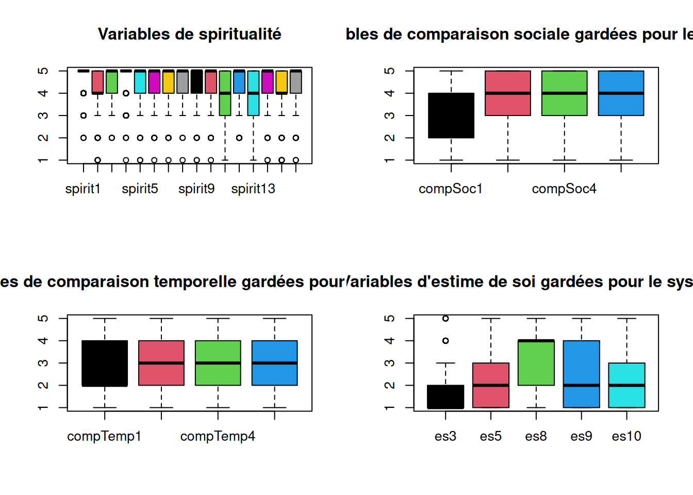
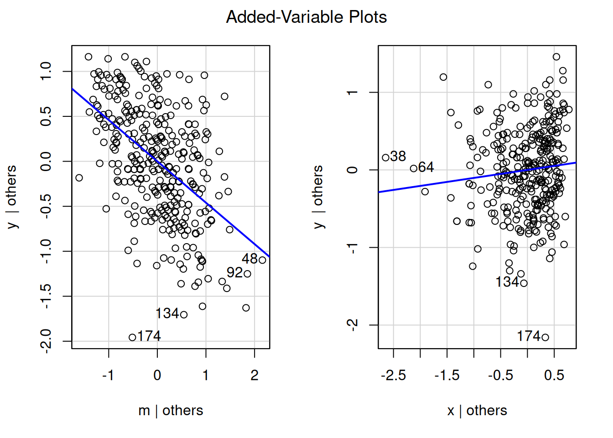
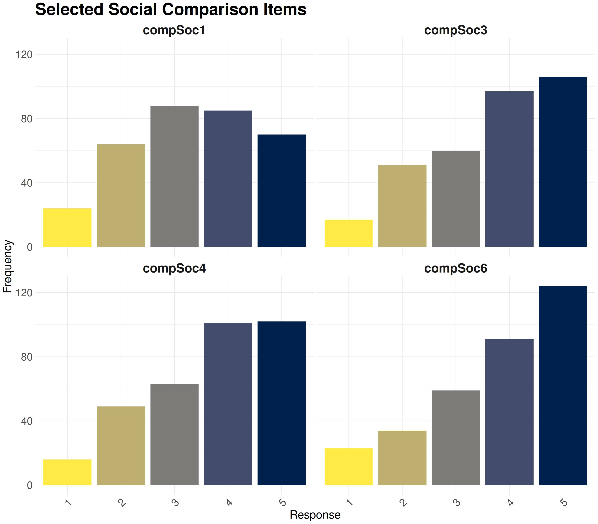
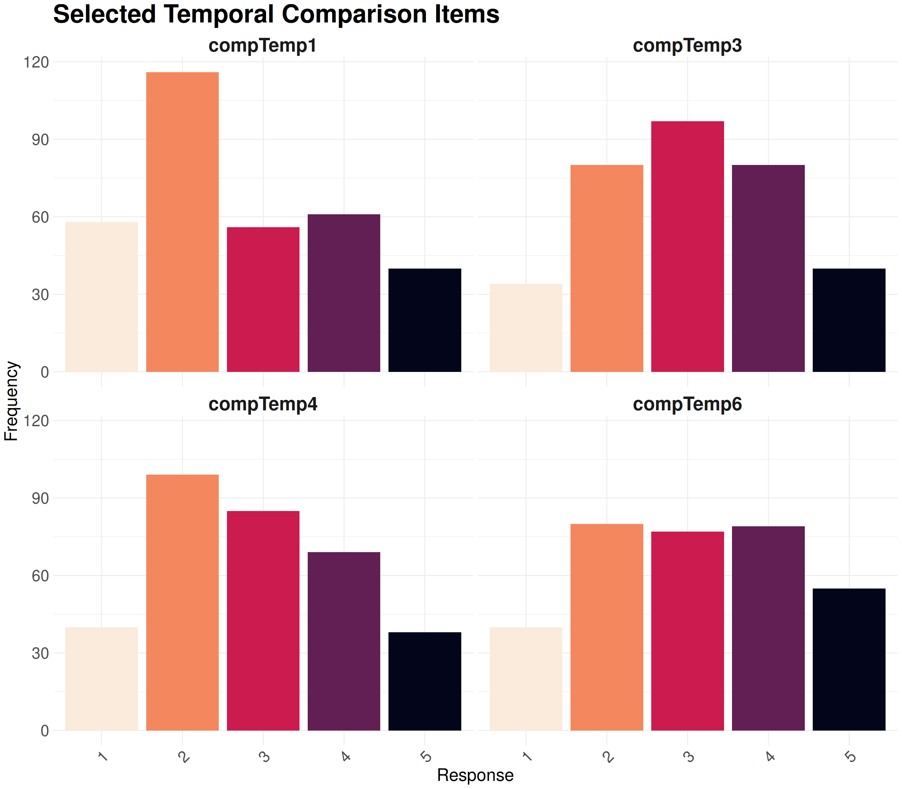
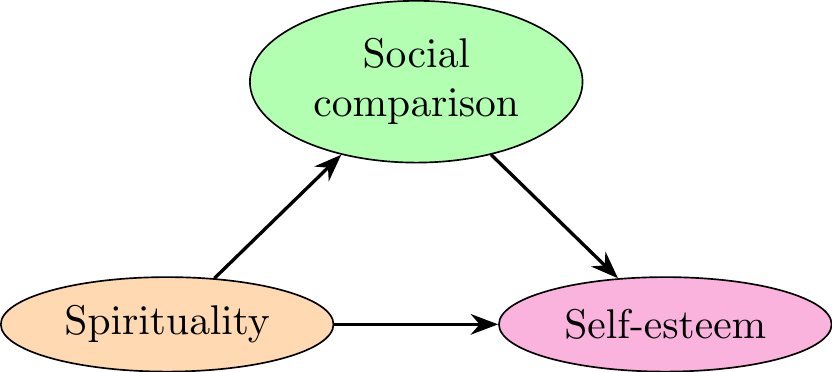
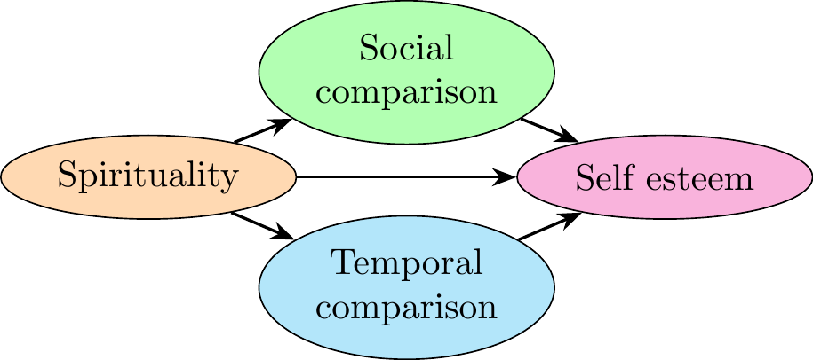

Show the code
library(lavaan)
library(dplyr)
# devtools::install_github('SachaEpskamp/semPlot')
# library(semPlot)Clément Poupelin
October 14, 2025
October 22, 2025
Cette analyse aura pour but de proposer une application simple de structural equation modeling pour introduire le concept.
Cela se fera sur une version modifié et plus simple d’un jeu de donnée utilisé dans l’article Explicit spirituality, self-esteem and the mechanisms of social and temporal comparison of Justine Ollivaud, Jean-Michel Galharret and Nicolas Roussiau.
IL s’agit d’une application dans le domaine de la recherche en psychologie qui vise à analyser l’impact de la spiritualité sur l’estime de soi.
The data frame used for the study includes 331 individuals. They are characterized by the 47 following variables :
Identifiant : integer assigned to the individual
spirit1, \(\cdots\) , spirit16 : answers of the individual for the 16 questions which relate to spirituality
Score_Spirit : total score of the individual for the questions which relate to spirituality
CompSoc1, \(\cdots\) , CompSoc8 : answers of the individual for the 8 questions which relate to social comparison
Score_CompS : total score of the individual for the questions which relate to social comparison
CompTemp1, \(\cdots\) , CompTemp8 : answers of the individual for the 8 questions which relate to temporal comparison
Score_CompT : total score of the individual for the questions which relate to temporal comparison
es1, \(\cdots\) , es10 : answers of the individual for the 10 questions which relate to self esteem
Score_ES : total score of the individual for the questions which relate to self esteem
par(mfrow=c(2,2))
boxplot(data[,2:17], col = 1:16, main ='Variables de spiritualité')
#boxplot(data[,19:26], col = 1:16, main ='Variables de comparaison sociale')
boxplot(compSoc_selected, col = 1:16, main ='Variables de comparaison sociale gardées pour le système')
#boxplot(data[,28:35], col = 1:16, main ='Variables de comparaison temporelle')
boxplot(compTemp_selected, col = 1:16, main ='Variables de comparaison temporelle gardées pour le système')
#boxplot(data[,37:46], col = 1:16, main ="Variables d'estime de soi")
boxplot(es_selected, col = 1:16, main ="Variables d'estime de soi gardées pour le système")
Call:
lm(formula = m ~ x)
Residuals:
Min 1Q Median 3Q Max
-1.60826 -0.49391 0.02527 0.49259 2.16091
Coefficients:
Estimate Std. Error t value Pr(>|t|)
(Intercept) 3.75886 0.31178 12.056 < 2e-16 ***
x -0.30683 0.06996 -4.386 1.56e-05 ***
---
Signif. codes: 0 '***' 0.001 '**' 0.01 '*' 0.05 '.' 0.1 ' ' 1
Residual standard error: 0.6836 on 329 degrees of freedom
Multiple R-squared: 0.05524, Adjusted R-squared: 0.05236
F-statistic: 19.24 on 1 and 329 DF, p-value: 1.558e-05
Call:
lm(formula = y ~ m + x)
Residuals:
Min 1Q Median 3Q Max
-2.1939 -0.3667 0.0061 0.3898 1.4025
Coefficients:
Estimate Std. Error t value Pr(>|t|)
(Intercept) 4.59609 0.29881 15.381 <2e-16 ***
m -0.46000 0.04401 -10.453 <2e-16 ***
x 0.10314 0.05745 1.795 0.0735 .
---
Signif. codes: 0 '***' 0.001 '**' 0.01 '*' 0.05 '.' 0.1 ' ' 1
Residual standard error: 0.5456 on 328 degrees of freedom
Multiple R-squared: 0.2813, Adjusted R-squared: 0.277
F-statistic: 64.2 on 2 and 328 DF, p-value: < 2.2e-16
Now, we can propose an example of SEM (For more details, do not hesitate to see the dedicated publication Structural equation modeling and application in psychology).

This model can be interpreted as a study aiming to explain the direct effect of \(X\) on \(Y\) and the indirect effect of \(X\) on \(Y\) through \(M\). The latter variable is called the mediation variable. In detail, we have:
We can rewrite the model as a system:
\[ \begin{cases} \textbf{Measurement model} \\ m_i = \gamma_i M + \xi_{m_i}, \quad \text{for } i \in \{1, ..., r\} \\ x_j = \alpha_j X + \xi_{x_j}, \quad \text{for } j \in \{1, ..., s\} \\ y_k = \beta_k Y + \xi_{y_k}, \quad \text{for } k \in \{1, ..., t\} \\ \\ \textbf{Structural Model} \\ M = b_0 + b_1 X + \mathcal{E}_{M} \\ Y = a_0 + a_1 X + a_2 M + \mathcal{E}_Y \end{cases} \]
We can also rewrite the structural model in the form of a matrix equation:
\[ \begin{pmatrix} M \\ Y \end{pmatrix} = \begin{pmatrix} b_0 \\ a_0 \end{pmatrix} + \begin{pmatrix} b_1 & 0 \\ a_1 & a_2 \end{pmatrix} \begin{pmatrix} X \\ M \end{pmatrix} + \begin{pmatrix} \mathcal{E}_{M} \\ \mathcal{E}_Y \end{pmatrix} \]
Now, thanks to the way we wrote the model, we can make the different effects explicit. To do this, we take the structural model and substitute the first line into the second line:
\[ \begin{cases} M = b_0 + b_1 X + \mathcal{E}_{M} \\ Y = a_0 + a_1 X + a_2 M + \mathcal{E}_Y \end{cases} \]
\(\Leftrightarrow Y = a_0 + a_1 X + a_2 (b_0 + b_1 X + \mathcal{E}_{M}) + \mathcal{E}_Y\)
\(\Leftrightarrow Y = a_0 + a_2 b_0 + a_1 X + a_2 b_1 X + \mathcal{E}'\)
\(\Leftrightarrow Y = (a_0 + a_2 b_0) + (a_1 + a_2 b_1) X + \mathcal{E}'\)
Here, \(\quad \mathcal{E}' = a_2 \mathcal{E}_{M} + \mathcal{E}_Y\) with \(\mathcal{E}' \in [X]^\bot\) because \(\mathcal{E}_M \in [X]^\bot\) and \(\mathcal{E}_Y \in [X, M]^\bot\)
Therefore, we can write the effects of \(X\) on \(Y\):
\[ \underbrace{\overbrace{a_2 b_1}^{\text{Indirect effect}} + \overbrace{a_1}^{\text{Direct effect}}}_{\text{Total effect}} \]
We build several model which connects the latent variables Spirituality, Social comparison, Temporal comparison and Self esteem.
Each of them being determined by different observed variables.
The library lavaan on R is usually used to estimate a large variety of multivariate statistical models, like structural equation modeling. For information, this package also permit to estimate path analysis, confirmatory factor analysis and growth curve models.
To programm a structural equation modeling on R, we proceed like this :
\[\begin{align*} & \text{Model <- `}\\ & \quad \# \; \text{latent variables} \\ & \quad \quad X =\sim x_1 + x_2 + x_3 \\ & \quad \quad M =\sim m_1 + m_2 + m_3 \\ & \quad \quad Y =\sim y_1 + y_2 + y_3\\ & \quad \# \; \text{regressions} \\ & \quad \quad M \sim X \\ & \quad \quad Y \sim M + X\\ & \quad \# \; \text{residual covariances} \\ & \quad \quad x_1 \sim \sim x_2 \quad \text{`} \end{align*}\]
We can recognize different types of operators :
Then, to fit the model we use the following function :
\[\begin{align*} fit <- sem(\text{model} = \text{Model}, \text{ data}) \end{align*}\]
To make a summary on fit permit to obtain some informations like the AIC criterion and the BIC criterion of the model but also an estimation of the differents coefficients.
Furthermore, there is also possible to do a SEM on Python with the package semopy. The method used is similar to the one used with lavaan and the estimations are very closed.
Before to model the data frame, it is necessary to determine the four latent variables that will be used in the different models : Spirituality, Social comparison, Temporal comparison and Self-esteem.
For the variable Spirituality, we preserve all the observed variables of the study. Nevertheless, for Social comparison, Temporal comparison and Self-esteem we only keep the observed variables which have positive coefficients. We can summarize the number of observed variables per latent variables in the following tabular.
| Latent Variables | Number of Observed Variables |
|---|---|
| Spirituality | 16 |
| Social comparison | 4 |
| Temporal comparison | 4 |
| Self-esteem | 5 |
Table 2: Number of observed variables per latent variable
We can express the measurement model for the latent variables with their corresponding observed variables in the form of equations:
\[ \begin{cases} \textsf{Spirituality} = \sim \textit{spirit1 + spirit2 + spirit3 + spirit4 + spirit5} \\ \quad \quad \quad \quad \quad \quad \quad + \textit{spirit6 + spirit7 + spirit8 + spirit9 + spirit10} \\ \quad \quad \quad \quad \quad \quad \quad + \textit{spirit11 + spirit12 + spirit13 + spirit14 + spirit15} \\ \quad \quad \quad \quad \quad \quad \quad + \textit{spirit16} \\ \\ \textsf{Social comparison} = \sim \textit{compSoc1 + compSoc3 + compSoc4 + compSoc6} \\ \\ \textsf{Temporal comparison} = \sim \textit{compTemp1 + compTemp3 + compTemp4} \\ \quad \quad \quad \quad \quad \quad \quad \quad \quad + \textit{compTemp6}\\ \\ \textsf{Self-esteem} = \sim \textit{es3 + es5 + es8 + es9 + es10} \end{cases} \]
Disposing of all our latent variables, it is possible to build different models of structural equations.

model1 <- '
# Measurement model
CompSoc =~ compSoc1 + compSoc3 + compSoc4 + compSoc6
ES =~ es3 + es5 + es8 + es9 + es10
Spirit =~ spirit1 + spirit2 + spirit3 + spirit4 + spirit5 + spirit6 + spirit7 + spirit8 + spirit9 + spirit10 + spirit11 + spirit12 + spirit13 + spirit14 + spirit15 + spirit16
# Structural model
CompSoc ~ 1 + b1 * Spirit
ES ~ 1 + a1 * Spirit + a2 * CompSoc
Direct := a1
Indirect := b1 * a2
Total := Direct + Indirect
'
fit1 <- sem(
model1,
# The structural equation model
data = data,
# The dataset containing the variables to be analyzed
std.lv = T,
# Standardization of latent variables
# T (TRUE): Latent variables will be standardized (mean=0, standard deviation=1)
# F (FALSE): Latent variables will not be standardized (default)
# Useful for comparing coefficients across different models or studies
se = "boot",
# Method for estimating standard errors
# "boot": Uses bootstrapping to estimate standard errors
# Other possible options: "standard" (default), "robust", etc.
# Bootstrapping is useful for small sample sizes or when normality assumptions are not met
bootstrap = 100 # Number of bootstrap resamples
# 100: Number of bootstrap replications to perform
# Higher numbers provide more precise estimates but increase computation time
# A minimum of 100 is often recommended, but 1000 or more is ideal for stable results
# This parameter is only considered if se="boot"
)summary(fit1)
lavaan 0.6-20 ended normally after 37 iterations
Estimator ML
Optimization method NLMINB
Number of model parameters 80
Number of observations 331
Model Test User Model:
Test statistic 789.406
Degrees of freedom 270
P-value (Chi-square) 0.000
Model Test Baseline Model:
Test statistic 4059.958
Degrees of freedom 300
P-value 0.000
User Model versus Baseline Model:
Comparative Fit Index (CFI) 0.862
Tucker-Lewis Index (TLI) 0.847
Loglikelihood and Information Criteria:
Loglikelihood user model (H0) -9203.847
Loglikelihood unrestricted model (H1) -8809.144
Akaike (AIC) 18567.694
Bayesian (BIC) 18871.863
Sample-size adjusted Bayesian (SABIC) 18618.101
Root Mean Square Error of Approximation:
RMSEA 0.076
90 Percent confidence interval - lower 0.070
90 Percent confidence interval - upper 0.082
P-value H_0: RMSEA <= 0.050 0.000
P-value H_0: RMSEA >= 0.080 0.161
Standardized Root Mean Square Residual:
SRMR 0.060
Parameter Estimates:
Standard errors Bootstrap
Number of requested bootstrap draws 100
Number of successful bootstrap draws 100
Latent Variables:
Estimate Std.Err z-value P(>|z|)
CompSoc =~
compSoc1 0.322 0.084 3.840 0.000
compSoc3 0.916 0.074 12.364 0.000
compSoc4 0.865 0.069 12.619 0.000
compSoc6 0.388 0.074 5.255 0.000
ES =~
es3 0.601 0.063 9.523 0.000
es5 0.712 0.067 10.663 0.000
es8 0.585 0.066 8.835 0.000
es9 1.032 0.057 18.210 0.000
es10 1.024 0.063 16.332 0.000
Spirit =~
spirit1 0.334 0.039 8.556 0.000
spirit2 0.579 0.047 12.388 0.000
spirit3 0.462 0.041 11.400 0.000
spirit4 0.425 0.060 7.025 0.000
spirit5 0.491 0.033 14.766 0.000
spirit6 0.490 0.041 11.982 0.000
spirit7 0.598 0.048 12.570 0.000
spirit8 0.445 0.053 8.463 0.000
spirit9 0.529 0.045 11.684 0.000
spirit10 0.563 0.050 11.267 0.000
spirit11 0.626 0.039 16.083 0.000
spirit12 0.547 0.045 12.119 0.000
spirit13 0.519 0.053 9.748 0.000
spirit14 0.555 0.052 10.608 0.000
spirit15 0.574 0.052 11.097 0.000
spirit16 0.508 0.050 10.105 0.000
Regressions:
Estimate Std.Err z-value P(>|z|)
CompSoc ~
Spirit (b1) 0.363 0.082 4.444 0.000
ES ~
Spirit (a1) -0.034 0.061 -0.550 0.582
CompSoc (a2) -0.258 0.086 -3.017 0.003
Intercepts:
Estimate Std.Err z-value P(>|z|)
.CompSoc 0.000 0.010 0.000 1.000
.ES 0.000 0.021 0.000 1.000
.compSoc1 3.341 0.065 51.535 0.000
.compSoc3 3.677 0.057 64.719 0.000
.compSoc4 3.677 0.058 63.081 0.000
.compSoc6 3.782 0.066 56.955 0.000
.es3 1.755 0.038 45.635 0.000
.es5 2.006 0.044 45.206 0.000
.es8 3.369 0.071 47.648 0.000
.es9 2.438 0.049 49.468 0.000
.es10 2.178 0.047 46.431 0.000
.spirit1 4.740 0.031 151.550 0.000
.spirit2 4.248 0.048 87.605 0.000
.spirit3 4.607 0.035 131.830 0.000
.spirit4 4.674 0.037 125.548 0.000
.spirit5 4.356 0.043 101.477 0.000
.spirit6 4.438 0.045 99.448 0.000
.spirit7 4.459 0.044 101.948 0.000
.spirit8 4.698 0.035 135.047 0.000
.spirit9 4.447 0.046 96.231 0.000
.spirit10 4.474 0.039 113.651 0.000
.spirit11 4.054 0.053 76.776 0.000
.spirit12 4.495 0.044 102.862 0.000
.spirit13 4.009 0.050 80.829 0.000
.spirit14 4.411 0.046 96.643 0.000
.spirit15 4.260 0.045 94.111 0.000
.spirit16 4.414 0.044 99.457 0.000
Variances:
Estimate Std.Err z-value P(>|z|)
.compSoc1 1.352 0.093 14.569 0.000
.compSoc3 0.526 0.123 4.262 0.000
.compSoc4 0.574 0.110 5.242 0.000
.compSoc6 1.371 0.118 11.654 0.000
.es3 0.567 0.081 7.023 0.000
.es5 0.593 0.104 5.688 0.000
.es8 1.415 0.085 16.654 0.000
.es9 0.463 0.094 4.944 0.000
.es10 0.401 0.087 4.623 0.000
.spirit1 0.189 0.030 6.261 0.000
.spirit2 0.479 0.068 7.019 0.000
.spirit3 0.158 0.019 8.355 0.000
.spirit4 0.245 0.031 7.873 0.000
.spirit5 0.381 0.054 7.045 0.000
.spirit6 0.369 0.056 6.621 0.000
.spirit7 0.283 0.043 6.524 0.000
.spirit8 0.140 0.018 7.640 0.000
.spirit9 0.372 0.047 7.858 0.000
.spirit10 0.253 0.029 8.871 0.000
.spirit11 0.458 0.042 10.940 0.000
.spirit12 0.229 0.030 7.637 0.000
.spirit13 0.803 0.083 9.665 0.000
.spirit14 0.315 0.036 8.743 0.000
.spirit15 0.497 0.067 7.476 0.000
.spirit16 0.378 0.042 9.084 0.000
.CompSoc 1.000
.ES 1.000
Spirit 1.000
R-Square:
Estimate
compSoc1 0.080
compSoc3 0.644
compSoc4 0.596
compSoc6 0.111
es3 0.408
es5 0.481
es8 0.208
es9 0.714
es10 0.739
spirit1 0.371
spirit2 0.412
spirit3 0.575
spirit4 0.425
spirit5 0.388
spirit6 0.394
spirit7 0.559
spirit8 0.586
spirit9 0.429
spirit10 0.556
spirit11 0.461
spirit12 0.566
spirit13 0.251
spirit14 0.494
spirit15 0.398
spirit16 0.405
CompSoc 0.117
ES 0.077
Defined Parameters:
Estimate Std.Err z-value P(>|z|)
Direct -0.034 0.061 -0.550 0.582
Indirect -0.094 0.038 -2.495 0.013
Total -0.128 0.060 -2.133 0.033The aim is to analyze direct and indirect effects on Self-esteem for the model fit1. To reference the first part, we rename our latent variables:
\[ \begin{cases} X := \textsf{Spirituality} \\ M_1 := \textsf{Social comparison} \\ Y := \textsf{Self-esteem} \end{cases} \]
This is a mediation model. It is possible to analyze the direct and indirect effects on \(Y\).
First, we make explicit the structural model and substitute in the expression of \(Y\):
\[ \begin{cases} M_1 = b_0 + b_1 X + \mathcal{E}_{M_1} \\ Y = a_0 + a_1 X + a_2 M_1 + \mathcal{E}_Y \end{cases} \]
\(\Leftrightarrow Y = (a_0 + a_2 b_0) + (a_1 + a_2 b_1) X + \mathcal{E}'\)
We can verify that the model is identifiable by looking if the degree of freedom is greater than 0 :
Degree of fredom for fit1 : 270Finally, with the summary of the fit of the model fit1 in R, we can build the following table:
| Effect | Expression | Estimate | Std.Err | P-value |
|---|---|---|---|---|
| Direct | \(a_1\) | -0.034 | 0.061 | 0.582 |
| Indirect | \(a_2 b_1\) | -0.094 | 0.038 | 0.013 |
| Total | \(a_1 + a_2 b_1\) | -0.128 | 0.060 | 0.033 |
Table 3: Effects on \(Y\) for the model fit1
We can conclude that in the model fit1, the indirect effect is significant for the variable Self-esteem.

model2 <- '
# Measurement model
CompTemp =~ compTemp1 + compTemp3 + compTemp4 + compTemp6
ES =~ es3 + es5 + es8 + es9 + es10
Spirit =~ spirit1 + spirit2 + spirit3 + spirit4 + spirit5 + spirit6 + spirit7 + spirit8 + spirit9 + spirit10 + spirit11 + spirit12 + spirit13 + spirit14 + spirit15 + spirit16
# Structural model
CompTemp ~ 1 + b1 * Spirit
ES ~ 1 + a1 * Spirit + a2 * CompTemp
Direct := a1
Indirect := b1 * a2
Total := Direct + Indirect
'
fit2 <- sem(
model2,
data = data,
std.lv = T,
se = "boot",
bootstrap = 100
)summary(fit2)
lavaan 0.6-20 ended normally after 38 iterations
Estimator ML
Optimization method NLMINB
Number of model parameters 80
Number of observations 331
Model Test User Model:
Test statistic 798.679
Degrees of freedom 270
P-value (Chi-square) 0.000
Model Test Baseline Model:
Test statistic 4261.841
Degrees of freedom 300
P-value 0.000
User Model versus Baseline Model:
Comparative Fit Index (CFI) 0.867
Tucker-Lewis Index (TLI) 0.852
Loglikelihood and Information Criteria:
Loglikelihood user model (H0) -9124.922
Loglikelihood unrestricted model (H1) -8725.582
Akaike (AIC) 18409.843
Bayesian (BIC) 18714.013
Sample-size adjusted Bayesian (SABIC) 18460.251
Root Mean Square Error of Approximation:
RMSEA 0.077
90 Percent confidence interval - lower 0.071
90 Percent confidence interval - upper 0.083
P-value H_0: RMSEA <= 0.050 0.000
P-value H_0: RMSEA >= 0.080 0.209
Standardized Root Mean Square Residual:
SRMR 0.058
Parameter Estimates:
Standard errors Bootstrap
Number of requested bootstrap draws 100
Number of successful bootstrap draws 100
Latent Variables:
Estimate Std.Err z-value P(>|z|)
CompTemp =~
compTemp1 0.790 0.064 12.366 0.000
compTemp3 0.886 0.062 14.260 0.000
compTemp4 1.042 0.048 21.574 0.000
compTemp6 0.740 0.078 9.536 0.000
ES =~
es3 0.622 0.066 9.424 0.000
es5 0.737 0.068 10.845 0.000
es8 0.599 0.069 8.680 0.000
es9 1.066 0.058 18.327 0.000
es10 1.055 0.063 16.635 0.000
Spirit =~
spirit1 0.335 0.039 8.569 0.000
spirit2 0.580 0.047 12.450 0.000
spirit3 0.462 0.041 11.354 0.000
spirit4 0.425 0.061 7.031 0.000
spirit5 0.492 0.033 14.767 0.000
spirit6 0.491 0.041 11.992 0.000
spirit7 0.599 0.047 12.613 0.000
spirit8 0.445 0.053 8.459 0.000
spirit9 0.529 0.045 11.636 0.000
spirit10 0.562 0.050 11.195 0.000
spirit11 0.626 0.039 16.080 0.000
spirit12 0.547 0.045 12.091 0.000
spirit13 0.519 0.053 9.731 0.000
spirit14 0.553 0.052 10.546 0.000
spirit15 0.573 0.052 11.002 0.000
spirit16 0.505 0.050 10.047 0.000
Regressions:
Estimate Std.Err z-value P(>|z|)
CompTemp ~
Spirit (b1) 0.153 0.063 2.437 0.015
ES ~
Spirit (a1) -0.128 0.058 -2.221 0.026
CompTemp (a2) 0.029 0.070 0.413 0.679
Intercepts:
Estimate Std.Err z-value P(>|z|)
.CompTemp 0.000 0.015 0.000 1.000
.ES 0.000 0.022 0.000 1.000
.compTemp1 2.725 0.063 43.112 0.000
.compTemp3 3.036 0.047 64.128 0.000
.compTemp4 2.897 0.053 54.381 0.000
.compTemp6 3.088 0.062 50.146 0.000
.es3 1.755 0.039 45.502 0.000
.es5 2.006 0.044 45.126 0.000
.es8 3.369 0.071 47.553 0.000
.es9 2.438 0.049 49.278 0.000
.es10 2.178 0.047 46.288 0.000
.spirit1 4.740 0.031 151.549 0.000
.spirit2 4.248 0.048 87.605 0.000
.spirit3 4.607 0.035 131.831 0.000
.spirit4 4.674 0.037 125.548 0.000
.spirit5 4.356 0.043 101.478 0.000
.spirit6 4.438 0.045 99.448 0.000
.spirit7 4.459 0.044 101.948 0.000
.spirit8 4.698 0.035 135.046 0.000
.spirit9 4.447 0.046 96.231 0.000
.spirit10 4.474 0.039 113.651 0.000
.spirit11 4.054 0.053 76.776 0.000
.spirit12 4.495 0.044 102.863 0.000
.spirit13 4.009 0.050 80.829 0.000
.spirit14 4.411 0.046 96.643 0.000
.spirit15 4.260 0.045 94.111 0.000
.spirit16 4.414 0.044 99.457 0.000
Variances:
Estimate Std.Err z-value P(>|z|)
.compTemp1 1.005 0.115 8.749 0.000
.compTemp3 0.573 0.092 6.252 0.000
.compTemp4 0.330 0.071 4.653 0.000
.compTemp6 1.060 0.121 8.794 0.000
.es3 0.565 0.083 6.789 0.000
.es5 0.589 0.108 5.470 0.000
.es8 1.421 0.085 16.653 0.000
.es9 0.462 0.099 4.653 0.000
.es10 0.405 0.093 4.344 0.000
.spirit1 0.189 0.030 6.216 0.000
.spirit2 0.479 0.068 7.044 0.000
.spirit3 0.158 0.019 8.368 0.000
.spirit4 0.244 0.031 7.819 0.000
.spirit5 0.380 0.054 7.064 0.000
.spirit6 0.368 0.056 6.621 0.000
.spirit7 0.282 0.043 6.567 0.000
.spirit8 0.139 0.018 7.639 0.000
.spirit9 0.373 0.047 7.910 0.000
.spirit10 0.254 0.029 8.878 0.000
.spirit11 0.457 0.042 10.965 0.000
.spirit12 0.229 0.030 7.645 0.000
.spirit13 0.803 0.083 9.649 0.000
.spirit14 0.317 0.036 8.711 0.000
.spirit15 0.499 0.067 7.461 0.000
.spirit16 0.380 0.042 9.126 0.000
.CompTemp 1.000
.ES 1.000
Spirit 1.000
R-Square:
Estimate
compTemp1 0.388
compTemp3 0.584
compTemp4 0.771
compTemp6 0.346
es3 0.411
es5 0.484
es8 0.204
es9 0.714
es10 0.736
spirit1 0.374
spirit2 0.412
spirit3 0.575
spirit4 0.425
spirit5 0.389
spirit6 0.396
spirit7 0.559
spirit8 0.588
spirit9 0.428
spirit10 0.554
spirit11 0.462
spirit12 0.566
spirit13 0.251
spirit14 0.491
spirit15 0.396
spirit16 0.402
CompTemp 0.023
ES 0.016
Defined Parameters:
Estimate Std.Err z-value P(>|z|)
Direct -0.128 0.058 -2.221 0.026
Indirect 0.004 0.012 0.354 0.723
Total -0.124 0.057 -2.164 0.030The aim is to analyze direct and indirect effects on Self-esteem for the model fit2. To reference the first part, we rename our latent variables:
\[ \begin{cases} X := \textsf{Spirituality} \\ M_2 := \textsf{Temporal comparison} \\ Y := \textsf{Self-esteem} \end{cases} \]
This is still a mediation model. It is possible to analyze the direct and indirect effects on \(Y\).
First, we make explicit the structural model and substitute in the expression of \(Y\):
\[ \begin{cases} M_2 = b_0 + b_1 X + \mathcal{E}_{M_2} \\ Y = a_0 + a_1 X + a_2 M_2 + \mathcal{E}_Y \end{cases} \]
\(\Leftrightarrow Y = (a_0 + a_2 b_0) + (a_1 + a_2 b_1) X + \mathcal{E}'\)
We can verify that the model is identifiable by looking if the degree of freedom is greater than 0 :
Degree of fredom for fit2 : 245Finally, with the summary of the fit of the model fit2 in R, we can build the following table:
| Effect | Expression | Estimate | Std.Err | P-value |
|---|---|---|---|---|
| Direct | \(a_1\) | -0.128 | 0.058 | 0.026 |
| Indirect | \(a_2 b_1\) | 0.004 | 0.012 | 0.723 |
| Total | \(a_1 + a_2 b_1\) | -0.124 | 0.057 | 0.030 |
Table ?????,: Effects on \(Y\) for the model fit2
We can conclude that in the model fit2, the direct effect is significant for the variable Self-esteem.

model3 <- '
# Measurement model
CompSoc =~ compSoc1 + compSoc3 + compSoc4 + compSoc6
CompTemp =~ compTemp1 + compTemp3 + compTemp4 + compTemp6
ES =~ es3 + es5 + es8 + es9 + es10
Spirit =~ spirit1 + spirit2 + spirit3 + spirit4 + spirit5 + spirit6 + spirit7 + spirit8 + spirit9 + spirit10 + spirit11 + spirit12 + spirit13 + spirit14 + spirit15 + spirit16
# Structural model
CompSoc ~ 1 + c1 * Spirit
CompTemp ~ 1 + b1 * Spirit
ES ~ 1 + a1 * Spirit + a2 * CompSoc + a3 * CompTemp
Direct := a1
Indirect1 := (c1 * a2)
Indirect2 := (b1 * a3)
Indirect := (c1 * a2) + (b1 * a3)
Total := Direct + Indirect
'
fit3 <- sem(
model3,
data = data,
std.lv = T,
se = "boot",
bootstrap = 100
)summary(fit3)
lavaan 0.6-20 ended normally after 39 iterations
Estimator ML
Optimization method NLMINB
Number of model parameters 95
Number of observations 331
Model Test User Model:
Test statistic 1006.804
Degrees of freedom 369
P-value (Chi-square) 0.000
Model Test Baseline Model:
Test statistic 4728.539
Degrees of freedom 406
P-value 0.000
User Model versus Baseline Model:
Comparative Fit Index (CFI) 0.852
Tucker-Lewis Index (TLI) 0.838
Loglikelihood and Information Criteria:
Loglikelihood user model (H0) -11132.232
Loglikelihood unrestricted model (H1) -10628.830
Akaike (AIC) 22454.464
Bayesian (BIC) 22815.665
Sample-size adjusted Bayesian (SABIC) 22514.322
Root Mean Square Error of Approximation:
RMSEA 0.072
90 Percent confidence interval - lower 0.067
90 Percent confidence interval - upper 0.078
P-value H_0: RMSEA <= 0.050 0.000
P-value H_0: RMSEA >= 0.080 0.009
Standardized Root Mean Square Residual:
SRMR 0.070
Parameter Estimates:
Standard errors Bootstrap
Number of requested bootstrap draws 100
Number of successful bootstrap draws 100
Latent Variables:
Estimate Std.Err z-value P(>|z|)
CompSoc =~
compSoc1 0.322 0.084 3.853 0.000
compSoc3 0.917 0.074 12.426 0.000
compSoc4 0.861 0.069 12.482 0.000
compSoc6 0.388 0.074 5.241 0.000
CompTemp =~
compTemp1 0.794 0.064 12.418 0.000
compTemp3 0.887 0.061 14.516 0.000
compTemp4 1.034 0.049 21.260 0.000
compTemp6 0.740 0.077 9.613 0.000
ES =~
es3 0.597 0.062 9.663 0.000
es5 0.706 0.065 10.824 0.000
es8 0.580 0.065 8.975 0.000
es9 1.018 0.063 16.116 0.000
es10 1.008 0.069 14.658 0.000
Spirit =~
spirit1 0.334 0.039 8.556 0.000
spirit2 0.579 0.047 12.384 0.000
spirit3 0.462 0.041 11.384 0.000
spirit4 0.425 0.060 7.021 0.000
spirit5 0.492 0.033 14.777 0.000
spirit6 0.490 0.041 12.006 0.000
spirit7 0.598 0.048 12.511 0.000
spirit8 0.444 0.053 8.442 0.000
spirit9 0.530 0.045 11.695 0.000
spirit10 0.563 0.050 11.270 0.000
spirit11 0.626 0.039 16.087 0.000
spirit12 0.546 0.045 12.107 0.000
spirit13 0.519 0.053 9.748 0.000
spirit14 0.554 0.052 10.584 0.000
spirit15 0.575 0.052 11.123 0.000
spirit16 0.507 0.050 10.089 0.000
Regressions:
Estimate Std.Err z-value P(>|z|)
CompSoc ~
Spirit (c1) 0.369 0.083 4.427 0.000
CompTemp ~
Spirit (b1) 0.164 0.064 2.543 0.011
ES ~
Spirit (a1) -0.036 0.062 -0.582 0.561
CompSoc (a2) -0.315 0.102 -3.101 0.002
CompTemp (a3) 0.141 0.083 1.685 0.092
Intercepts:
Estimate Std.Err z-value P(>|z|)
.CompSoc 0.000 0.011 0.000 1.000
.CompTemp 0.000 0.015 0.000 1.000
.ES 0.000 0.021 0.000 1.000
.compSoc1 3.341 0.065 51.567 0.000
.compSoc3 3.677 0.057 64.948 0.000
.compSoc4 3.677 0.058 63.252 0.000
.compSoc6 3.782 0.066 56.981 0.000
.compTemp1 2.725 0.063 43.184 0.000
.compTemp3 3.036 0.048 63.882 0.000
.compTemp4 2.897 0.054 53.961 0.000
.compTemp6 3.088 0.062 50.090 0.000
.es3 1.755 0.038 45.855 0.000
.es5 2.006 0.044 45.476 0.000
.es8 3.369 0.071 47.662 0.000
.es9 2.438 0.049 49.382 0.000
.es10 2.178 0.047 46.383 0.000
.spirit1 4.740 0.031 151.549 0.000
.spirit2 4.248 0.048 87.605 0.000
.spirit3 4.607 0.035 131.830 0.000
.spirit4 4.674 0.037 125.549 0.000
.spirit5 4.356 0.043 101.478 0.000
.spirit6 4.438 0.045 99.449 0.000
.spirit7 4.459 0.044 101.948 0.000
.spirit8 4.698 0.035 135.047 0.000
.spirit9 4.447 0.046 96.231 0.000
.spirit10 4.474 0.039 113.651 0.000
.spirit11 4.054 0.053 76.776 0.000
.spirit12 4.495 0.044 102.863 0.000
.spirit13 4.009 0.050 80.829 0.000
.spirit14 4.411 0.046 96.643 0.000
.spirit15 4.260 0.045 94.111 0.000
.spirit16 4.414 0.044 99.458 0.000
Variances:
Estimate Std.Err z-value P(>|z|)
.compSoc1 1.352 0.093 14.570 0.000
.compSoc3 0.521 0.123 4.243 0.000
.compSoc4 0.579 0.110 5.274 0.000
.compSoc6 1.371 0.118 11.646 0.000
.compTemp1 0.996 0.116 8.624 0.000
.compTemp3 0.568 0.090 6.342 0.000
.compTemp4 0.342 0.070 4.857 0.000
.compTemp6 1.058 0.120 8.796 0.000
.es3 0.562 0.082 6.825 0.000
.es5 0.588 0.106 5.565 0.000
.es8 1.412 0.084 16.731 0.000
.es9 0.467 0.098 4.783 0.000
.es10 0.408 0.091 4.498 0.000
.spirit1 0.189 0.030 6.273 0.000
.spirit2 0.479 0.068 7.016 0.000
.spirit3 0.158 0.019 8.332 0.000
.spirit4 0.245 0.031 7.892 0.000
.spirit5 0.380 0.054 7.051 0.000
.spirit6 0.369 0.056 6.619 0.000
.spirit7 0.284 0.043 6.523 0.000
.spirit8 0.140 0.018 7.651 0.000
.spirit9 0.371 0.047 7.900 0.000
.spirit10 0.253 0.028 8.882 0.000
.spirit11 0.457 0.042 10.963 0.000
.spirit12 0.229 0.030 7.638 0.000
.spirit13 0.803 0.083 9.658 0.000
.spirit14 0.316 0.036 8.755 0.000
.spirit15 0.497 0.067 7.462 0.000
.spirit16 0.378 0.042 9.097 0.000
.CompSoc 1.000
.CompTemp 1.000
.ES 1.000
Spirit 1.000
R-Square:
Estimate
compSoc1 0.080
compSoc3 0.647
compSoc4 0.592
compSoc6 0.111
compTemp1 0.394
compTemp3 0.587
compTemp4 0.763
compTemp6 0.347
es3 0.419
es5 0.491
es8 0.213
es9 0.716
es10 0.739
spirit1 0.371
spirit2 0.412
spirit3 0.574
spirit4 0.424
spirit5 0.389
spirit6 0.394
spirit7 0.558
spirit8 0.584
spirit9 0.431
spirit10 0.556
spirit11 0.461
spirit12 0.565
spirit13 0.251
spirit14 0.493
spirit15 0.399
spirit16 0.405
CompSoc 0.120
CompTemp 0.026
ES 0.120
Defined Parameters:
Estimate Std.Err z-value P(>|z|)
Direct -0.036 0.062 -0.582 0.561
Indirect1 -0.116 0.047 -2.478 0.013
Indirect2 0.023 0.019 1.188 0.235
Indirect -0.093 0.038 -2.462 0.014
Total -0.129 0.061 -2.124 0.034The aim is to analyse direct and indirect effects on Self-esteem for the model fit3. To reference to the first part, we rename our latent variables as we already have done for fit1 and fit2 :
\[ \begin{cases} X := \textsf{Spirituality} \\ M_1 := \textsf{Social comparison} \\ M_2 := \textsf{Temporal comparison} \\ Y := \textsf{Self-esteem} \end{cases} \]
This is a parallel mediation model. It is possible to analyse the direct and indirect effects on \(Y\). Before that, we explicit the structural model and we substitute in the expression of \(Y\).
\[ \begin{cases} M_1 = c_0 + c_1X + \mathcal{E}_{M_1}\\ M_2 = b_0 + b_1 X + \mathcal{E}_{M_2} \\ Y = a_0 + a_1 X + a_2 M_1 + a_3M_2 + \mathcal{E}_Y \end{cases} \] \[\Leftrightarrow Y = (a_0 + a_2c_0 + a_3b_0) + (a_1 + a_2c_1 + a_3b_1)X + \mathcal{E}'\] We can verify that the model is identifiable by looking if the degree of freedom is greater than 0 :
Degree of fredom for fit3 : 369Finally, with the summary of the fit of the model fit3 in R, we can build the following table:
| Effect | Expression | Estimate | Std.Err | P-value |
|---|---|---|---|---|
| Direct | \(a_1\) | -0.036 | 0.062 | 0.561 |
| Indirect1 | \(a_2 c_1\) | -0.116 | 0.047 | 0.013 |
| Indirect2 | \(a_3 b_1\) | 0.023 | 0.019 | 0.235 |
| Indirect | \(a_2 c_1 + a_3 b_1\) | -0.093 | 0.038 | 0.014 |
| Total | \(a_1 + a_2 c_1 + a_3 b_1\) | -0.129 | 0.061 | 0.034 |
Table ?????,: Effects on \(Y\) for the model fit3
We can conclude that in the model fit3, the indirect effect is significant for the variable Self-esteem.
Especially, the most significant effect is given by the path :
Spirituality \(\rightarrow\) Social comparison \(\rightarrow\) Self-esteem.
model4 <- '
# Measurement model
CompSoc =~ compSoc1 + compSoc3 + compSoc4 + compSoc6
CompTemp =~ compTemp1 + compTemp3 + compTemp4 + compTemp6
ES =~ es3 + es5 + es8 + es9 + es10
Spirit =~ spirit1 + spirit2 + spirit3 + spirit4 + spirit5 + spirit6 + spirit7 + spirit8 + spirit9 + spirit10 + spirit11 + spirit12 + spirit13 + spirit14 + spirit15 + spirit16
# Structural model
CompSoc ~ 1 + c1 * Spirit
CompTemp ~ 1 + b1 * Spirit + b2 * CompSoc
ES ~ 1 + a1 * Spirit + a2 * CompSoc + a3 * CompTemp
Direct := a1
Indirect1 := (c1 * a2)
Indirect2 := (b1 * a3)
Indirect3 := (c1 * b2 * a3)
Indirect := (c1 * a2) + (b1 * a3) + (c1 * b2 * a3)
Total := Direct + Indirect
'
fit4 <- sem(
model4,
data = data,
std.lv = T,
se = "boot",
bootstrap = 100
)summary(fit4)
lavaan 0.6-20 ended normally after 36 iterations
Estimator ML
Optimization method NLMINB
Number of model parameters 96
Number of observations 331
Model Test User Model:
Test statistic 958.542
Degrees of freedom 368
P-value (Chi-square) 0.000
Model Test Baseline Model:
Test statistic 4728.539
Degrees of freedom 406
P-value 0.000
User Model versus Baseline Model:
Comparative Fit Index (CFI) 0.863
Tucker-Lewis Index (TLI) 0.849
Loglikelihood and Information Criteria:
Loglikelihood user model (H0) -11108.101
Loglikelihood unrestricted model (H1) -10628.830
Akaike (AIC) 22408.201
Bayesian (BIC) 22773.205
Sample-size adjusted Bayesian (SABIC) 22468.690
Root Mean Square Error of Approximation:
RMSEA 0.070
90 Percent confidence interval - lower 0.064
90 Percent confidence interval - upper 0.075
P-value H_0: RMSEA <= 0.050 0.000
P-value H_0: RMSEA >= 0.080 0.001
Standardized Root Mean Square Residual:
SRMR 0.059
Parameter Estimates:
Standard errors Bootstrap
Number of requested bootstrap draws 100
Number of successful bootstrap draws 100
Latent Variables:
Estimate Std.Err z-value P(>|z|)
CompSoc =~
compSoc1 0.339 0.084 4.021 0.000
compSoc3 0.933 0.073 12.859 0.000
compSoc4 0.844 0.065 12.933 0.000
compSoc6 0.383 0.074 5.180 0.000
CompTemp =~
compTemp1 0.711 0.065 11.000 0.000
compTemp3 0.802 0.060 13.370 0.000
compTemp4 0.891 0.057 15.662 0.000
compTemp6 0.657 0.066 10.009 0.000
ES =~
es3 0.595 0.061 9.685 0.000
es5 0.704 0.065 10.812 0.000
es8 0.578 0.064 8.964 0.000
es9 1.015 0.064 15.832 0.000
es10 1.005 0.070 14.429 0.000
Spirit =~
spirit1 0.334 0.039 8.555 0.000
spirit2 0.579 0.047 12.392 0.000
spirit3 0.462 0.041 11.389 0.000
spirit4 0.425 0.060 7.024 0.000
spirit5 0.492 0.033 14.769 0.000
spirit6 0.490 0.041 11.992 0.000
spirit7 0.598 0.048 12.552 0.000
spirit8 0.445 0.053 8.456 0.000
spirit9 0.529 0.045 11.677 0.000
spirit10 0.563 0.050 11.262 0.000
spirit11 0.626 0.039 16.087 0.000
spirit12 0.547 0.045 12.119 0.000
spirit13 0.519 0.053 9.749 0.000
spirit14 0.554 0.052 10.593 0.000
spirit15 0.574 0.052 11.097 0.000
spirit16 0.507 0.050 10.094 0.000
Regressions:
Estimate Std.Err z-value P(>|z|)
CompSoc ~
Spirit (c1) 0.364 0.082 4.450 0.000
CompTemp ~
Spirit (b1) -0.011 0.062 -0.173 0.862
CompSoc (b2) 0.529 0.102 5.163 0.000
ES ~
Spirit (a1) -0.033 0.063 -0.518 0.604
CompSoc (a2) -0.356 0.118 -3.024 0.002
CompTemp (a3) 0.177 0.087 2.030 0.042
Intercepts:
Estimate Std.Err z-value P(>|z|)
.CompSoc 0.000 0.014 0.000 1.000
.CompTemp 0.000 0.014 0.000 1.000
.ES 0.000 0.021 0.000 1.000
.compSoc1 3.341 0.064 52.388 0.000
.compSoc3 3.677 0.055 67.427 0.000
.compSoc4 3.677 0.058 63.882 0.000
.compSoc6 3.782 0.066 56.999 0.000
.compTemp1 2.725 0.062 43.710 0.000
.compTemp3 3.036 0.047 65.250 0.000
.compTemp4 2.897 0.054 53.876 0.000
.compTemp6 3.088 0.061 50.578 0.000
.es3 1.755 0.038 45.765 0.000
.es5 2.006 0.044 45.281 0.000
.es8 3.369 0.071 47.635 0.000
.es9 2.438 0.049 49.278 0.000
.es10 2.178 0.047 46.226 0.000
.spirit1 4.740 0.031 151.550 0.000
.spirit2 4.248 0.048 87.605 0.000
.spirit3 4.607 0.035 131.830 0.000
.spirit4 4.674 0.037 125.547 0.000
.spirit5 4.356 0.043 101.477 0.000
.spirit6 4.438 0.045 99.448 0.000
.spirit7 4.459 0.044 101.948 0.000
.spirit8 4.698 0.035 135.047 0.000
.spirit9 4.447 0.046 96.231 0.000
.spirit10 4.474 0.039 113.651 0.000
.spirit11 4.054 0.053 76.776 0.000
.spirit12 4.495 0.044 102.863 0.000
.spirit13 4.009 0.050 80.829 0.000
.spirit14 4.411 0.046 96.643 0.000
.spirit15 4.260 0.045 94.111 0.000
.spirit16 4.414 0.044 99.457 0.000
Variances:
Estimate Std.Err z-value P(>|z|)
.compSoc1 1.340 0.094 14.194 0.000
.compSoc3 0.490 0.118 4.168 0.000
.compSoc4 0.614 0.101 6.062 0.000
.compSoc6 1.376 0.116 11.884 0.000
.compTemp1 0.981 0.113 8.643 0.000
.compTemp3 0.532 0.085 6.275 0.000
.compTemp4 0.397 0.069 5.785 0.000
.compTemp6 1.054 0.120 8.803 0.000
.es3 0.562 0.082 6.823 0.000
.es5 0.588 0.106 5.560 0.000
.es8 1.412 0.084 16.729 0.000
.es9 0.467 0.098 4.783 0.000
.es10 0.408 0.091 4.499 0.000
.spirit1 0.189 0.030 6.260 0.000
.spirit2 0.479 0.068 7.022 0.000
.spirit3 0.158 0.019 8.340 0.000
.spirit4 0.245 0.031 7.875 0.000
.spirit5 0.380 0.054 7.054 0.000
.spirit6 0.369 0.056 6.621 0.000
.spirit7 0.283 0.043 6.522 0.000
.spirit8 0.140 0.018 7.641 0.000
.spirit9 0.372 0.047 7.881 0.000
.spirit10 0.253 0.028 8.876 0.000
.spirit11 0.457 0.042 10.954 0.000
.spirit12 0.229 0.030 7.640 0.000
.spirit13 0.803 0.083 9.663 0.000
.spirit14 0.315 0.036 8.738 0.000
.spirit15 0.497 0.067 7.470 0.000
.spirit16 0.378 0.042 9.093 0.000
.CompSoc 1.000
.CompTemp 1.000
.ES 1.000
Spirit 1.000
R-Square:
Estimate
compSoc1 0.088
compSoc3 0.668
compSoc4 0.568
compSoc6 0.108
compTemp1 0.403
compTemp3 0.614
compTemp4 0.724
compTemp6 0.350
es3 0.413
es5 0.485
es8 0.209
es9 0.711
es10 0.734
spirit1 0.371
spirit2 0.412
spirit3 0.575
spirit4 0.425
spirit5 0.388
spirit6 0.394
spirit7 0.559
spirit8 0.585
spirit9 0.429
spirit10 0.556
spirit11 0.461
spirit12 0.566
spirit13 0.251
spirit14 0.494
spirit15 0.398
spirit16 0.405
CompSoc 0.117
CompTemp 0.238
ES 0.105
Defined Parameters:
Estimate Std.Err z-value P(>|z|)
Direct -0.033 0.063 -0.518 0.604
Indirect1 -0.129 0.053 -2.458 0.014
Indirect2 -0.002 0.013 -0.150 0.880
Indirect3 0.034 0.021 1.606 0.108
Indirect -0.097 0.039 -2.461 0.014
Total -0.130 0.061 -2.125 0.034The aim is to analyse direct and indirect effects on Self-esteem for the model fit4. To reference to the first part, we rename our latent variables as we already have done for fit1 and fit2 :
\[ \begin{cases} X := \textsf{Spirituality} \\ M_1 := \textsf{Social comparison} \\ M_2 := \textsf{Temporal comparison} \\ Y := \textsf{Self-esteem} \end{cases} \]
This is a serial mediation model. It is possible to analyse the direct and indirect effects on \(Y\). Before that, we explicit the structural model and we substitute in the expression of \(Y\).
\[ \begin{cases} M_1 = c_0 + c_1X + \mathcal{E}_{M_1}\\ M_2 = b_0 + b_1 X + b_2 M_2 + \mathcal{E}_{M_2} \\ Y = a_0 + a_1 X + a_2 M_1 + a_3M_2 + \mathcal{E}_Y \end{cases} \] \[\Leftrightarrow Y = (a_0 + a_2c_0 + a_3b_0 + a_3b_2c_0) + (a_1 + a_2c_1 + a_3b_1 + a_3b_2c_1)X + \mathcal{E}'\] We can verify that the model is identifiable by looking if the degree of freedom is greater than 0 :
Degree of fredom for fit4 : 368Finally, with the summary of the fit of the model fi43 in R, we can build the following table:
| Effect | Expression | Estimate | Std.Err | P-value |
|---|---|---|---|---|
| Direct | \(a_1\) | -0.033 | 0.063 | 0.604 |
| Indirect1 | \(a_2 c_1\) | -0.129 | 0.053 | 0.014 |
| Indirect2 | \(a_3 b_1\) | -0.002 | 0.013 | 0.880 |
| Indirect3 | \(a_3b_2c_1\) | 0.034 | 0.021 | 0.108 |
| Indirect | \(a_2 c_1 + a_3 b_1 + a_3b_2c_1\) | -0.097 | 0.039 | 0.014 |
| Total | \(a_1 + a_2c_1 + a_3b_1 + a_3b_2c_1\) | -0.130 | 0.061 | 0.034 |
Table ?????,: Effects on \(Y\) for the model fit4
We can conclude that in the model fit4, the indirect effect is significant for the variable Self-esteem.
Especially, the most significant effect is given by the path :
Spirituality \(\rightarrow\) Social comparison \(\rightarrow\) Self-esteem (same as fit3).
In this part, the objective will be to compare all the models we built to determine which one is the best for the study.
In both cases, the best model is the model which minimize the criterion AIC and the criterion BIC. We retain the models and .
Now stay available two models which are and . To decide between them, we realize a test of nested models using the function on .\
The Chi-Squared Difference Test give a p-value of 0,000104. \ The test indicates that it is preferable to keep the additional variable of the model .\
We can conclude that the model is the best model for the study.
The aim of the study was to understand the connections between spirituality, social comparison, temporal comparison and self-esteem for individuals. Especially, we wanted to analyze the effects of spirituality on self-esteem and determine if they pass through social comparison and/or temporal comparison.
Thanks to criteria and tests we used, we were able to define the best model for this study : .
It gather all the notions and take into account an influence of social comparison on temporal comparison. According to this model which highlights the significance of the indirect effect , the main effect on self-esteem of individuals is social comparison due to spirituality.
To put it in a nutshell, we can conclude in favor of connection between the different notions. Especially, the effect of spirituality on self-esteem transits by social comparison.
─ Session info ───────────────────────────────────────────────────────────────
setting value
version R version 4.4.2 (2024-10-31)
os Ubuntu 24.04.1 LTS
system x86_64, linux-gnu
ui X11
language (EN)
collate fr_FR.UTF-8
ctype fr_FR.UTF-8
tz Europe/Paris
date 2025-10-22
pandoc 3.2 @ /usr/lib/rstudio/resources/app/bin/quarto/bin/tools/x86_64/ (via rmarkdown)
─ Packages ───────────────────────────────────────────────────────────────────
package * version date (UTC) lib source
abind 1.4-8 2024-09-12 [1] CRAN (R 4.4.2)
askpass 1.2.1 2024-10-04 [2] CRAN (R 4.3.3)
bslib 0.9.0 2025-01-30 [1] CRAN (R 4.4.2)
cachem 1.1.0 2024-05-16 [2] CRAN (R 4.3.3)
car 3.1-3 2024-09-27 [1] CRAN (R 4.4.2)
carData 3.0-5 2022-01-06 [1] CRAN (R 4.4.2)
cli 3.6.5 2025-04-23 [1] CRAN (R 4.4.2)
crosstalk 1.2.1 2023-11-23 [1] CRAN (R 4.4.2)
devtools 2.4.5 2022-10-11 [1] CRAN (R 4.4.2)
digest 0.6.37 2024-08-19 [1] CRAN (R 4.4.2)
dplyr * 1.1.4 2023-11-17 [1] CRAN (R 4.4.2)
DT 0.33 2024-04-04 [1] CRAN (R 4.4.2)
ellipsis 0.3.2 2021-04-29 [2] CRAN (R 4.3.3)
evaluate 1.0.5 2025-08-27 [1] CRAN (R 4.4.2)
fastmap 1.2.0 2024-05-15 [2] CRAN (R 4.3.3)
Formula 1.2-5 2023-02-24 [1] CRAN (R 4.4.2)
fs 1.6.6 2025-04-12 [1] CRAN (R 4.4.2)
generics 0.1.3 2022-07-05 [1] CRAN (R 4.4.2)
glue 1.8.0 2024-09-30 [2] CRAN (R 4.3.3)
htmltools 0.5.8.1 2024-04-04 [2] CRAN (R 4.3.3)
htmlwidgets 1.6.4 2023-12-06 [2] CRAN (R 4.3.3)
httpuv 1.6.15 2024-03-26 [2] CRAN (R 4.3.3)
jquerylib 0.1.4 2021-04-26 [2] CRAN (R 4.3.3)
jsonlite 2.0.0 2025-03-27 [1] CRAN (R 4.4.2)
knitr 1.50 2025-03-16 [1] CRAN (R 4.4.2)
later 1.4.1 2024-11-27 [2] CRAN (R 4.3.3)
lavaan * 0.6-20 2025-09-21 [1] CRAN (R 4.4.2)
lifecycle 1.0.4 2023-11-07 [2] CRAN (R 4.3.3)
magick 2.9.0 2025-09-08 [1] CRAN (R 4.4.2)
magrittr 2.0.4 2025-09-12 [1] CRAN (R 4.4.2)
MASS 7.3-60.0.1 2024-01-13 [4] CRAN (R 4.3.2)
memoise 2.0.1 2021-11-26 [2] CRAN (R 4.3.3)
mime 0.13 2025-03-17 [1] CRAN (R 4.4.2)
miniUI 0.1.1.1 2018-05-18 [2] CRAN (R 4.3.3)
mnormt 2.1.1 2022-09-26 [1] CRAN (R 4.4.2)
pbivnorm 0.6.0 2015-01-23 [1] CRAN (R 4.4.2)
pdftools 3.6.0 2025-09-10 [1] CRAN (R 4.4.2)
pillar 1.10.1 2025-01-07 [2] CRAN (R 4.3.3)
pkgbuild 1.4.6 2025-01-16 [2] CRAN (R 4.3.3)
pkgconfig 2.0.3 2019-09-22 [2] CRAN (R 4.3.3)
pkgload 1.4.0 2024-06-28 [2] CRAN (R 4.3.3)
profvis 0.4.0 2024-09-20 [2] CRAN (R 4.3.3)
promises 1.3.2 2024-11-28 [2] CRAN (R 4.3.3)
purrr 1.0.4 2025-02-05 [1] CRAN (R 4.4.2)
qpdf 1.4.1 2025-07-02 [1] CRAN (R 4.4.2)
quadprog 1.5-8 2019-11-20 [1] CRAN (R 4.4.2)
R6 2.6.1 2025-02-15 [1] CRAN (R 4.4.2)
Rcpp 1.1.0 2025-07-02 [1] CRAN (R 4.4.2)
remotes 2.5.0 2024-03-17 [2] CRAN (R 4.3.3)
rlang 1.1.6 2025-04-11 [1] CRAN (R 4.4.2)
rmarkdown 2.30 2025-09-28 [1] CRAN (R 4.4.2)
rstudioapi 0.17.1 2024-10-22 [2] CRAN (R 4.3.3)
sass 0.4.10 2025-04-11 [1] CRAN (R 4.4.2)
semPower 2.1.3 2025-08-22 [1] CRAN (R 4.4.2)
sessioninfo 1.2.2 2021-12-06 [2] CRAN (R 4.3.3)
shiny 1.10.0 2024-12-14 [2] CRAN (R 4.3.3)
tibble 3.2.1 2023-03-20 [2] CRAN (R 4.3.3)
tidyselect 1.2.1 2024-03-11 [1] CRAN (R 4.4.2)
tinytex 0.57 2025-04-15 [1] CRAN (R 4.4.2)
urlchecker 1.0.1 2021-11-30 [1] CRAN (R 4.4.2)
usethis 3.1.0 2024-11-26 [2] CRAN (R 4.3.3)
vctrs 0.6.5 2023-12-01 [2] CRAN (R 4.3.3)
xfun 0.53 2025-08-19 [1] CRAN (R 4.4.2)
xtable 1.8-4 2019-04-21 [2] CRAN (R 4.3.3)
yaml 2.3.10 2024-07-26 [1] CRAN (R 4.4.2)
[1] /home/clement/R/x86_64-pc-linux-gnu-library/4.4
[2] /usr/local/lib/R/site-library
[3] /usr/lib/R/site-library
[4] /usr/lib/R/library
──────────────────────────────────────────────────────────────────────────────model5 <- '
# MODELE DE MESURE
CompSoc =~ compSoc1 + compSoc2 + compSoc3 + compSoc4 + compSoc5 + compSoc6 + compSoc7 + compSoc8
CompTemp =~ compTemp1 + compTemp2 + compTemp3 + compTemp4 + compTemp5 + compTemp6 + compTemp7 + compTemp8
ES =~ es1 + es2 + es3 + es4 + es5 + es6 + es7 + es8 + es9 + es10
Spirit =~ spirit1 + spirit2 + spirit3 + spirit4 + spirit5 + spirit6 + spirit7 + spirit8 + spirit9 + spirit10 + spirit11 + spirit12 + spirit13 + spirit14 + spirit15 + spirit16
# Structural model
CompSoc ~ 1 + c1 * Spirit
CompTemp ~ 1 + b1 * Spirit + b2 * CompSoc
ES ~ 1 + a1 * Spirit + a2 * CompSoc + a3 * CompTemp
Direct := a1
Indirect1 := (c1 * a2)
Indirect2 := (b1 * a3)
Indirect3 := (c1 * b2 * a3)
Indirect := (c1 * a2) + (b1 * a3) + (c1 * b2 * a3)
Total := Direct + Indirect
'
fit5 = sem(model5, data = data, std.lv = T, se = "boot", bootstrap = 100)
summary(fit5, fit=T, rsquare=T)lavaan 0.6-20 ended normally after 50 iterations
Estimator ML
Optimization method NLMINB
Number of model parameters 135
Number of observations 331
Model Test User Model:
Test statistic 2800.192
Degrees of freedom 810
P-value (Chi-square) 0.000
Model Test Baseline Model:
Test statistic 7515.918
Degrees of freedom 861
P-value 0.000
User Model versus Baseline Model:
Comparative Fit Index (CFI) 0.701
Tucker-Lewis Index (TLI) 0.682
Loglikelihood and Information Criteria:
Loglikelihood user model (H0) -16788.161
Loglikelihood unrestricted model (H1) -15388.065
Akaike (AIC) 33846.322
Bayesian (BIC) 34359.608
Sample-size adjusted Bayesian (SABIC) 33931.384
Root Mean Square Error of Approximation:
RMSEA 0.086
90 Percent confidence interval - lower 0.083
90 Percent confidence interval - upper 0.090
P-value H_0: RMSEA <= 0.050 0.000
P-value H_0: RMSEA >= 0.080 0.998
Standardized Root Mean Square Residual:
SRMR 0.107
Parameter Estimates:
Standard errors Bootstrap
Number of requested bootstrap draws 100
Number of successful bootstrap draws 100
Latent Variables:
Estimate Std.Err z-value P(>|z|)
CompSoc =~
compSoc1 -0.050 0.081 -0.618 0.536
compSoc2 -0.856 0.047 -18.281 0.000
compSoc3 0.335 0.082 4.105 0.000
compSoc4 0.315 0.084 3.734 0.000
compSoc5 -0.959 0.046 -20.951 0.000
compSoc6 0.048 0.092 0.521 0.603
compSoc7 -0.955 0.057 -16.878 0.000
compSoc8 -1.029 0.049 -20.877 0.000
CompTemp =~
compTemp1 0.745 0.174 4.289 0.000
compTemp2 -0.482 0.091 -5.292 0.000
compTemp3 0.938 0.147 6.380 0.000
compTemp4 0.956 0.176 5.428 0.000
compTemp5 -0.478 0.143 -3.351 0.001
compTemp6 0.713 0.141 5.043 0.000
compTemp7 -0.282 0.188 -1.505 0.132
compTemp8 -0.316 0.193 -1.632 0.103
ES =~
es1 0.118 0.054 2.188 0.029
es2 0.200 0.040 5.052 0.000
es3 -0.499 0.048 -10.291 0.000
es4 0.234 0.050 4.660 0.000
es5 -0.611 0.050 -12.309 0.000
es6 0.505 0.069 7.263 0.000
es7 0.443 0.062 7.135 0.000
es8 -0.495 0.058 -8.500 0.000
es9 -0.822 0.057 -14.404 0.000
es10 -0.797 0.065 -12.315 0.000
Spirit =~
spirit1 0.336 0.039 8.595 0.000
spirit2 0.579 0.047 12.414 0.000
spirit3 0.463 0.041 11.358 0.000
spirit4 0.425 0.060 7.032 0.000
spirit5 0.492 0.033 14.782 0.000
spirit6 0.491 0.041 12.026 0.000
spirit7 0.598 0.048 12.591 0.000
spirit8 0.445 0.053 8.452 0.000
spirit9 0.529 0.046 11.603 0.000
spirit10 0.562 0.050 11.188 0.000
spirit11 0.626 0.039 16.044 0.000
spirit12 0.547 0.045 12.094 0.000
spirit13 0.517 0.053 9.673 0.000
spirit14 0.553 0.052 10.571 0.000
spirit15 0.572 0.052 10.965 0.000
spirit16 0.506 0.050 10.042 0.000
Regressions:
Estimate Std.Err z-value P(>|z|)
CompSoc ~
Spirit (c1) 0.090 0.061 1.463 0.143
CompTemp ~
Spirit (b1) 0.165 0.064 2.563 0.010
CompSoc (b2) 0.037 0.174 0.210 0.833
ES ~
Spirit (a1) 0.201 0.087 2.309 0.021
CompSoc (a2) 0.678 0.109 6.237 0.000
CompTemp (a3) 0.074 0.081 0.913 0.361
Intercepts:
Estimate Std.Err z-value P(>|z|)
.CompSoc 0.000 0.027 0.000 1.000
.CompTemp 0.000 0.017 0.000 1.000
.ES 0.000 0.018 0.000 1.000
.compSoc1 3.341 0.066 50.686 0.000
.compSoc2 2.604 0.044 58.632 0.000
.compSoc3 3.677 0.061 60.073 0.000
.compSoc4 3.677 0.063 58.825 0.000
.compSoc5 2.381 0.050 48.037 0.000
.compSoc6 3.782 0.068 55.876 0.000
.compSoc7 2.178 0.042 51.544 0.000
.compSoc8 2.526 0.054 46.529 0.000
.compTemp1 2.725 0.065 42.096 0.000
.compTemp2 3.628 0.046 79.524 0.000
.compTemp3 3.036 0.047 64.871 0.000
.compTemp4 2.897 0.055 52.586 0.000
.compTemp5 3.411 0.054 63.526 0.000
.compTemp6 3.088 0.062 49.419 0.000
.compTemp7 3.181 0.065 49.214 0.000
.compTemp8 3.248 0.064 50.372 0.000
.es1 4.350 0.049 89.260 0.000
.es2 4.505 0.035 129.659 0.000
.es3 1.755 0.038 46.530 0.000
.es4 4.366 0.041 105.693 0.000
.es5 2.006 0.043 46.887 0.000
.es6 4.003 0.048 82.778 0.000
.es7 4.000 0.044 91.647 0.000
.es8 3.369 0.071 47.571 0.000
.es9 2.438 0.050 49.082 0.000
.es10 2.178 0.048 45.852 0.000
.spirit1 4.740 0.031 151.548 0.000
.spirit2 4.248 0.048 87.605 0.000
.spirit3 4.607 0.035 131.830 0.000
.spirit4 4.674 0.037 125.548 0.000
.spirit5 4.356 0.043 101.477 0.000
.spirit6 4.438 0.045 99.448 0.000
.spirit7 4.459 0.044 101.947 0.000
.spirit8 4.698 0.035 135.047 0.000
.spirit9 4.447 0.046 96.230 0.000
.spirit10 4.474 0.039 113.651 0.000
.spirit11 4.054 0.053 76.776 0.000
.spirit12 4.495 0.044 102.862 0.000
.spirit13 4.009 0.050 80.829 0.000
.spirit14 4.411 0.046 96.643 0.000
.spirit15 4.260 0.045 94.111 0.000
.spirit16 4.414 0.044 99.457 0.000
Variances:
Estimate Std.Err z-value P(>|z|)
.compSoc1 1.467 0.082 17.783 0.000
.compSoc2 0.510 0.059 8.587 0.000
.compSoc3 1.363 0.093 14.585 0.000
.compSoc4 1.321 0.103 12.839 0.000
.compSoc5 0.469 0.072 6.483 0.000
.compSoc6 1.539 0.107 14.379 0.000
.compSoc7 0.381 0.061 6.196 0.000
.compSoc8 0.627 0.091 6.901 0.000
.compTemp1 1.072 0.189 5.684 0.000
.compTemp2 0.864 0.115 7.493 0.000
.compTemp3 0.470 0.187 2.507 0.012
.compTemp4 0.499 0.240 2.079 0.038
.compTemp5 1.124 0.204 5.503 0.000
.compTemp6 1.097 0.173 6.349 0.000
.compTemp7 1.486 0.224 6.643 0.000
.compTemp8 1.474 0.264 5.591 0.000
.es1 0.689 0.064 10.723 0.000
.es2 0.291 0.023 12.531 0.000
.es3 0.574 0.074 7.753 0.000
.es4 0.456 0.053 8.521 0.000
.es5 0.566 0.091 6.223 0.000
.es6 0.492 0.072 6.817 0.000
.es7 0.476 0.062 7.637 0.000
.es8 1.407 0.096 14.702 0.000
.es9 0.576 0.092 6.232 0.000
.es10 0.555 0.094 5.879 0.000
.spirit1 0.188 0.030 6.229 0.000
.spirit2 0.480 0.068 7.033 0.000
.spirit3 0.158 0.019 8.409 0.000
.spirit4 0.245 0.031 7.807 0.000
.spirit5 0.380 0.054 7.056 0.000
.spirit6 0.367 0.056 6.614 0.000
.spirit7 0.283 0.043 6.585 0.000
.spirit8 0.140 0.018 7.619 0.000
.spirit9 0.373 0.047 7.911 0.000
.spirit10 0.253 0.029 8.874 0.000
.spirit11 0.457 0.042 10.941 0.000
.spirit12 0.229 0.030 7.658 0.000
.spirit13 0.805 0.083 9.659 0.000
.spirit14 0.317 0.036 8.746 0.000
.spirit15 0.500 0.067 7.441 0.000
.spirit16 0.380 0.042 9.116 0.000
.CompSoc 1.000
.CompTemp 1.000
.ES 1.000
Spirit 1.000
R-Square:
Estimate
compSoc1 0.002
compSoc2 0.591
compSoc3 0.077
compSoc4 0.070
compSoc5 0.664
compSoc6 0.002
compSoc7 0.707
compSoc8 0.630
compTemp1 0.347
compTemp2 0.217
compTemp3 0.659
compTemp4 0.653
compTemp5 0.173
compTemp6 0.323
compTemp7 0.052
compTemp8 0.065
es1 0.030
es2 0.175
es3 0.401
es4 0.156
es5 0.504
es6 0.444
es7 0.389
es8 0.212
es9 0.644
es10 0.639
spirit1 0.375
spirit2 0.411
spirit3 0.576
spirit4 0.425
spirit5 0.390
spirit6 0.397
spirit7 0.558
spirit8 0.587
spirit9 0.429
spirit10 0.555
spirit11 0.462
spirit12 0.566
spirit13 0.250
spirit14 0.492
spirit15 0.395
spirit16 0.403
CompSoc 0.008
CompTemp 0.029
ES 0.352
Defined Parameters:
Estimate Std.Err z-value P(>|z|)
Direct 0.201 0.087 2.309 0.021
Indirect1 0.061 0.043 1.418 0.156
Indirect2 0.012 0.014 0.866 0.386
Indirect3 0.000 0.002 0.117 0.907
Indirect 0.073 0.045 1.628 0.104
Total 0.275 0.087 3.146 0.002---
title: "Structural equation modeling and application in psychology (WIP)"
author: "Clément Poupelin"
date: 10-14-2025
date-modified: "`r Sys.Date()`"
format:
html:
embed-resources: false
toc: true
code-fold: true
code-summary: "Show the code"
code-tools: true
toc-location: right
page-layout: article
code-overflow: wrap
number-sections: false
editor: visual
categories: ["Structural Equation Modeling", "Psychology"]
description: "This study was made during the Supervised Study Project in Mathematics of the first year of master"
execute:
echo: true
warning: false
message: false
error: true
---
# Intervenant.e.s
### Rédaction
- **Clément Poupelin**, [clementjc.poupelin\@gmail.com](mailto:clementjc.poupelin@gmail.com){.email}\
### Relecture
-
<!-- ```{r tikz, engine = 'tikz', echo = FALSE, fig.width=6, fig.height=4} -->
<!-- \usetikzlibrary{shapes.geometric, arrows.meta, positioning} -->
<!-- \tikzstyle{decision} = [diamond, draw, fill=white] -->
<!-- \tikzstyle{line} = [draw, -Stealth, thick] -->
<!-- \tikzstyle{elli} = [draw, ellipse, fill=gray!20, minimum height=8mm, text width=5em, text centered] -->
<!-- \tikzstyle{block} = [draw, rectangle, fill=white, text width=8em, text centered, minimum height=7mm, node distance=3em] -->
<!-- \begin{tikzpicture} %[scale=0.5, transform shape] -->
<!-- % scale=1.2 agrandit tout de 20 %. -->
<!-- % transform shape permet de garder la mise à l’échelle du texte aussi. -->
<!-- % Create Blocks -->
<!-- \node [elli, fill = green!30!white] (compS) {Social comparison}; -->
<!-- \node [elli, fill = magenta!30!white, below of = compS, yshift=-3em, xshift=6em] (selfE) {Self-esteem}; -->
<!-- \node [elli, fill = orange!30!white, below of = compS, yshift=-3em, xshift=-6em] (spirit) {Spirituality}; -->
<!-- % Add Arrows -->
<!-- \path [line] (spirit) -- node[midway, above left] {$\beta = 0.45^{***}$} (compS); -->
<!-- \path [line] (compS) -- node[midway, right] {$\beta = 0.60^{***}$} (selfE); -->
<!-- \path [line] (spirit) -- node[midway, below] {$\beta = 0.25^{*}$} (selfE); -->
<!-- \end{tikzpicture} -->
<!-- ``` -->
## Setup
::: panel-tabset
### packages
```{r}
library(lavaan)
library(dplyr)
# devtools::install_github('SachaEpskamp/semPlot')
# library(semPlot)
```
### Functions
```{r}
```
### Seed
```{r}
set.seed(140400)
```
:::
## Abstract
Cette analyse aura pour but de proposer une application simple de structural equation modeling pour introduire le concept.
Cela se fera sur une version modifié et plus simple d'un jeu de donnée utilisé dans l'article [Explicit spirituality, self-esteem and the mechanisms of social and temporal comparison](https://dergipark.org.tr/en/download/article-file/2592756) of Justine Ollivaud, Jean-Michel Galharret and Nicolas Roussiau.\
IL s'agit d'une application dans le domaine de la recherche en psychologie qui vise à analyser l'impact de la spiritualité sur l'estime de soi.
## Import Data
```{r}
data <- read.csv("~/Documents/1_Projet/Perso/SSPM_data.csv")
data <- data[,1:47] %>% na.omit()
```
The data frame used for the study includes `r nrow(data)` individuals. They are characterized by the `r ncol(data)` following variables :
- `Identifiant` : integer assigned to the individual
- `spirit1`, $\cdots$ , `spirit16` : answers of the individual for the 16 questions which relate to spirituality
- `Score_Spirit` : total score of the individual for the questions which relate to spirituality
- `CompSoc1`, $\cdots$ , `CompSoc8` : answers of the individual for the 8 questions which relate to social comparison
- `Score_CompS` : total score of the individual for the questions which relate to social comparison
- `CompTemp1`, $\cdots$ , `CompTemp8` : answers of the individual for the 8 questions which relate to temporal comparison
- `Score_CompT` : total score of the individual for the questions which relate to temporal comparison
- `es1`, $\cdots$ , `es10` : answers of the individual for the 10 questions which relate to self esteem
- `Score_ES` : total score of the individual for the questions which relate to self esteem
<!-- - `Sexe` : sexe of the individual -->
<!-- - `Age` : age of the individual -->
<!-- - `Croy_Rel` : belief or not of the individual to religion -->
```{r}
data %>% DT::datatable()
```
```{r}
#on ne garde que les effets positifs
es_selected = subset(data, select = c(es3, es5, es8, es9, es10))
compSoc_selected = subset(data, select = c(compSoc1, compSoc3, compSoc4, compSoc6))
compTemp_selected = subset(data, select = c(compTemp1, compTemp3, compTemp4, compTemp6))
```
## Preliminary analysis
### Descriptive analysis
```{r}
par(mfrow=c(2,2))
boxplot(data[,2:17], col = 1:16, main ='Variables de spiritualité')
#boxplot(data[,19:26], col = 1:16, main ='Variables de comparaison sociale')
boxplot(compSoc_selected, col = 1:16, main ='Variables de comparaison sociale gardées pour le système')
#boxplot(data[,28:35], col = 1:16, main ='Variables de comparaison temporelle')
boxplot(compTemp_selected, col = 1:16, main ='Variables de comparaison temporelle gardées pour le système')
#boxplot(data[,37:46], col = 1:16, main ="Variables d'estime de soi")
boxplot(es_selected, col = 1:16, main ="Variables d'estime de soi gardées pour le système")
par(mfrow=c(1,1))
```
### Linear Model
```{r}
x = data$Score_Spirit
m = data$Score_CompS
y = data$Score_ES
M1 <- lm(m~x)
M2 <- lm(y~m+x)
summary(M1)
summary(M2)
car::avPlots(M2)
```
## Structural Equation Modeling
### Theory
Now, we can propose an example of SEM (For more details, do not hesitate to see the dedicated publication [Structural equation modeling and application in psychology](https://github.com/Clement-Poupelin/Clement-Poupelin.github.io/blob/main/docs/SSPM_Aela_JAGOT_Clement_POUPELIN_M1IS.pdf)).
```{r, engine = 'tikz', echo = FALSE, fig.width=6, fig.height=4, fig.align='center'}
\usetikzlibrary{shapes.geometric, arrows.meta, positioning}
\tikzstyle{decision} = [diamond, draw, fill=white]
\tikzstyle{line} = [draw, -Stealth, thick]
\tikzstyle{elli} = [draw, ellipse, fill=gray!20, minimum height=8mm, text width=5em, text centered]
\tikzstyle{block} = [draw, rectangle, fill=white, text width=8em, text centered, minimum height=7mm, node distance=3em]
\begin{tikzpicture}
% Create Blocks
% M et ses items
\node [elli, fill = red!30!white] (M) {$M$};
\node [block, fill = gray!20!white, above of = M, yshift=0.5em, xshift=-8em] (m1) {$m_1$};
\node [above of = M, yshift=2em, xshift=0em] (m2) {$\textbf{. . .}$};
\node [block, fill = gray!20!white, above of = M, yshift=0.5em, xshift=8em] (mr) {$m_r$};
\node [circle, fill = gray!20!white, above of = m1, yshift=1em, xshift=-1em] (xim1) {$\xi_{m_1}$};
\node [circle, fill = gray!20!white, above of = mr, yshift=1em, xshift=1em] (ximr) {$\xi_{m_r}$};
\node [circle, fill = red!30!white, below of = M, yshift=0.5em, xshift=-6em] (epsM) {$\mathcal{E}_M$};
% Y et ses items
\node [elli, fill = red!30!white, below of = M, yshift=-6em, xshift=9em] (Y) {\(Y\)};
\node [block, fill = gray!20!white, right of = Y, yshift=4em, xshift=3em] (y1) {$y_1$};
\node [ right of = Y, yshift=0em, xshift=8em] (y2) {$\textbf{. . .}$};
\node [block, fill = gray!20!white, right of = Y, yshift=-4em, xshift=1em] (yt) {$y_t$};
\node [circle, fill = gray!20!white, above of = y1, yshift=1em, xshift=4em] (xiy1) {$\xi_{y_1}$};
\node [circle, fill = gray!20!white, below of = yt, yshift=-1em, xshift=4em] (xiyt) {$\xi_{y_t}$};
\node [circle, fill = red!30!white, right of = Y, yshift=-4em, xshift=-6em] (epsY) {$\mathcal{E}_Y$};
% X et ses items
\node [elli, fill = red!30!white, below of = M, yshift=-10em, xshift=-10em] (X) {\(X\)};
\node [block, fill = gray!20!white, left of = X, yshift=-4em, xshift=1em] (x1) {$x_s$};
\node [left of = X, yshift=0em, xshift=-8em] (x2) {$\textbf{. . .}$};
\node [block, fill = gray!20!white, left of = X, yshift=4em, xshift=-2em] (xs) {$x_1$};
\node [circle, fill = gray!20!white, above of = xs, yshift=1em, xshift=-4em] (xixs) {$\xi_{x_1}$};
\node [circle, fill = gray!20!white, below of = x1, yshift=-1em, xshift=-3em] (xix1) {$\xi_{x_s}$};
% Add Arrows
\path [line] (X) -- (M);
\path [line] (M) -- (Y);
\path [line] (X) -- (Y);
\path [line] (M) -- (m1);
\path [line] (M) -- (mr);
\path [line] (xim1) -- (m1);
\path [line] (ximr) -- (mr);
\path [line] (epsM) -- (M);
\path [line] (Y) -- (y1);
\path [line] (Y) -- (yt);
\path [line] (xiy1) -- (y1);
\path [line] (xiyt) -- (yt);
\path [line] (epsY) -- (Y);
\path [line] (X) -- (x1);
\path [line] (X) -- (xs);
\path [line] (xix1) -- (x1);
\path [line] (xixs) -- (xs);
\end{tikzpicture}
```
This model can be interpreted as a study aiming to explain the direct effect of $X$ on $Y$ and the indirect effect of $X$ on $Y$ through $M$. The latter variable is called the **mediation variable**. In detail, we have:
- $Y$ and $M$ are latent endogenous variables
- $X$ is a latent exogenous variable
- $m_i$ are observed endogenous variables, for $i \in \{1, ..., r\}$
- $x_j$ are observed exogenous variables, for $j \in \{1, ..., s\}$
- $y_k$ are observed endogenous variables, for $k \in \{1, ..., t\}$
We can rewrite the model as a system:
$$
\begin{cases}
\textbf{Measurement model} \\
m_i = \gamma_i M + \xi_{m_i}, \quad \text{for } i \in \{1, ..., r\} \\
x_j = \alpha_j X + \xi_{x_j}, \quad \text{for } j \in \{1, ..., s\} \\
y_k = \beta_k Y + \xi_{y_k}, \quad \text{for } k \in \{1, ..., t\} \\
\\
\textbf{Structural Model} \\
M = b_0 + b_1 X + \mathcal{E}_{M} \\
Y = a_0 + a_1 X + a_2 M + \mathcal{E}_Y
\end{cases}
$$
We can also rewrite the structural model in the form of a matrix equation:
$$
\begin{pmatrix}
M \\
Y
\end{pmatrix}
=
\begin{pmatrix}
b_0 \\
a_0
\end{pmatrix}
+
\begin{pmatrix}
b_1 & 0 \\
a_1 & a_2
\end{pmatrix}
\begin{pmatrix}
X \\
M
\end{pmatrix}
+
\begin{pmatrix}
\mathcal{E}_{M} \\
\mathcal{E}_Y
\end{pmatrix}
$$
Now, thanks to the way we wrote the model, we can make the different effects explicit. To do this, we take the structural model and substitute the first line into the second line:
$$
\begin{cases}
M = b_0 + b_1 X + \mathcal{E}_{M} \\
Y = a_0 + a_1 X + a_2 M + \mathcal{E}_Y
\end{cases}
$$
$\Leftrightarrow Y = a_0 + a_1 X + a_2 (b_0 + b_1 X + \mathcal{E}_{M}) + \mathcal{E}_Y$
$\Leftrightarrow Y = a_0 + a_2 b_0 + a_1 X + a_2 b_1 X + \mathcal{E}'$
$\Leftrightarrow Y = (a_0 + a_2 b_0) + (a_1 + a_2 b_1) X + \mathcal{E}'$
Here, $\quad \mathcal{E}' = a_2 \mathcal{E}_{M} + \mathcal{E}_Y$ with $\mathcal{E}' \in [X]^\bot$ because $\mathcal{E}_M \in [X]^\bot$ and $\mathcal{E}_Y \in [X, M]^\bot$\
Therefore, we can write the effects of $X$ on $Y$:
$$
\underbrace{\overbrace{a_2 b_1}^{\text{Indirect effect}} + \overbrace{a_1}^{\text{Direct effect}}}_{\text{Total effect}}
$$
### Application
We build several model which connects the latent variables **Spirituality, Social comparison, Temporal comparison and Self esteem**.\
Each of them being determined by different observed variables.
::: panel-tabset
#### Programming with `lavaan`
The library `lavaan` on `R` is usually used to estimate a large variety of multivariate statistical models, like structural equation modeling. For information, this package also permit to estimate path analysis, confirmatory factor analysis and growth curve models.\
To programm a structural equation modeling on `R`, we proceed like this :
\begin{align*}
& \text{Model <- `}\\
& \quad \# \; \text{latent variables} \\
& \quad \quad X =\sim x_1 + x_2 + x_3 \\
& \quad \quad M =\sim m_1 + m_2 + m_3 \\
& \quad \quad Y =\sim y_1 + y_2 + y_3\\
& \quad \# \; \text{regressions} \\
& \quad \quad M \sim X \\
& \quad \quad Y \sim M + X\\
& \quad \# \; \text{residual covariances} \\
& \quad \quad x_1 \sim \sim x_2 \quad \text{`}
\end{align*}
We can recognize different types of operators :
- $=\sim$ : indicate by which observed variables is measured the latent variable
- $\sim \;\;\;$ : indicate by which linear regression is estimate the latent variable
- $\sim\sim$ : indicate the covariance between residuals
Then, to fit the model we use the following function :
\begin{align*}
fit <- sem(\text{model} = \text{Model}, \text{ data})
\end{align*}
To make a summary on `fit` permit to obtain some informations like the AIC criterion and the BIC criterion of the model but also an estimation of the differents coefficients.\
Furthermore, there is also possible to do a SEM on `Python` with the package `semopy`. The method used is similar to the one used with `lavaan` and the estimations are very closed.
#### Determination of the latent variables
Before to model the data frame, it is necessary to determine the four latent variables that will be used in the different models : **Spirituality**, **Social comparison**, **Temporal comparison** and **Self-esteem**.\
For the variable **Spirituality**, we preserve all the observed variables of the study. Nevertheless, for **Social comparison**, **Temporal comparison** and **Self-esteem** we only keep the observed variables which have positive coefficients. We can summarize the number of observed variables per latent variables in the following tabular.\
**Latent Variables** | **Number of Observed Variables** |
|-----------------------------|----------------------------------|
| Spirituality | 16 |
| Social comparison | 4 |
| Temporal comparison | 4 |
| Self-esteem | 5 |
*Table 2: Number of observed variables per latent variable*
We can express the measurement model for the latent variables with their corresponding observed variables in the form of equations:
$$
\begin{cases}
\textsf{Spirituality} = \sim \textit{spirit1 + spirit2 + spirit3 + spirit4 + spirit5} \\
\quad \quad \quad \quad \quad \quad \quad + \textit{spirit6 + spirit7 + spirit8 + spirit9 + spirit10} \\
\quad \quad \quad \quad \quad \quad \quad + \textit{spirit11 + spirit12 + spirit13 + spirit14 + spirit15} \\
\quad \quad \quad \quad \quad \quad \quad + \textit{spirit16} \\
\\
\textsf{Social comparison} = \sim \textit{compSoc1 + compSoc3 + compSoc4 + compSoc6} \\
\\
\textsf{Temporal comparison} = \sim \textit{compTemp1 + compTemp3 + compTemp4} \\
\quad \quad \quad \quad \quad \quad \quad \quad \quad + \textit{compTemp6}\\
\\
\textsf{Self-esteem} = \sim \textit{es3 + es5 + es8 + es9 + es10}
\end{cases}
$$
Disposing of all our latent variables, it is possible to build different models of structural equations.
#### Model 1
```{r, engine = 'tikz', echo = FALSE, fig.width=4, fig.height=2, fig.align='center'}
\usetikzlibrary{shapes.geometric, arrows.meta, positioning}
\tikzstyle{decision} = [diamond, draw, fill=white]
\tikzstyle{line} = [draw, -Stealth, thick]
\tikzstyle{elli} = [draw, ellipse, fill=gray!20, minimum height=8mm, text width=5em, text centered]
\tikzstyle{block} = [draw, rectangle, fill=white, text width=8em, text centered, minimum height=7mm, node distance=3em]
\begin{tikzpicture}
% Create Blocks
\node [elli, fill = green!30!white] (compS) {Social comparison};
\node [elli, fill = magenta!30!white, below of = compS, yshift=-3em, xshift=6em] (selfE) {Self-esteem};
\node [elli, fill = orange!30!white, below of = compS, yshift=-3em, xshift=-6em] (spirit) {Spirituality};
% Add Arrows
\path [line] (spirit) -- (compS);
\path [line] (compS) -- (selfE);
\path [line] (spirit) -- (selfE);
\end{tikzpicture}
```
```{r}
model1 <- '
# Measurement model
CompSoc =~ compSoc1 + compSoc3 + compSoc4 + compSoc6
ES =~ es3 + es5 + es8 + es9 + es10
Spirit =~ spirit1 + spirit2 + spirit3 + spirit4 + spirit5 + spirit6 + spirit7 + spirit8 + spirit9 + spirit10 + spirit11 + spirit12 + spirit13 + spirit14 + spirit15 + spirit16
# Structural model
CompSoc ~ 1 + b1 * Spirit
ES ~ 1 + a1 * Spirit + a2 * CompSoc
Direct := a1
Indirect := b1 * a2
Total := Direct + Indirect
'
fit1 <- sem(
model1,
# The structural equation model
data = data,
# The dataset containing the variables to be analyzed
std.lv = T,
# Standardization of latent variables
# T (TRUE): Latent variables will be standardized (mean=0, standard deviation=1)
# F (FALSE): Latent variables will not be standardized (default)
# Useful for comparing coefficients across different models or studies
se = "boot",
# Method for estimating standard errors
# "boot": Uses bootstrapping to estimate standard errors
# Other possible options: "standard" (default), "robust", etc.
# Bootstrapping is useful for small sample sizes or when normality assumptions are not met
bootstrap = 100 # Number of bootstrap resamples
# 100: Number of bootstrap replications to perform
# Higher numbers provide more precise estimates but increase computation time
# A minimum of 100 is often recommended, but 1000 or more is ideal for stable results
# This parameter is only considered if se="boot"
)
```
<details><summary>`summary(fit1)`</summary>
```{r, results='markup'}
summary(fit1, fit = T, rsquare = T)
```
</details>
The aim is to analyze direct and indirect effects on **Self-esteem** for the model `fit1`. To reference the first part, we rename our latent variables:
$$
\begin{cases}
X := \textsf{Spirituality} \\
M_1 := \textsf{Social comparison} \\
Y := \textsf{Self-esteem}
\end{cases}
$$
This is a **mediation model**. It is possible to analyze the direct and indirect effects on $Y$.\
First, we make explicit the structural model and substitute in the expression of $Y$:
$$
\begin{cases}
M_1 = b_0 + b_1 X + \mathcal{E}_{M_1} \\
Y = a_0 + a_1 X + a_2 M_1 + \mathcal{E}_Y
\end{cases}
$$
$\Leftrightarrow Y = (a_0 + a_2 b_0) + (a_1 + a_2 b_1) X + \mathcal{E}'$
We can verify that the model is identifiable by looking if the **degree of freedom is greater than 0** :
```{r}
cat("Degree of fredom for fit1 :", semPower::semPower.getDf(fit1))
```
Finally, with the summary of the fit of the model `fit1` in `R`, we can build the following table:
**Effect** | **Expression** | **Estimate** | **Std.Err** | **P-value** |
|--------------|----------------|--------------|-------------|-------------|
| Direct | $a_1$ | -0.034 | 0.061 | 0.582 |
| Indirect | $a_2 b_1$ | -0.094 | 0.038 | 0.013 |
| Total | $a_1 + a_2 b_1$| -0.128 | 0.060 | 0.033 |
*Table 3: Effects on $Y$ for the model `fit1`*
We can conclude that in the model `fit1`, the **indirect effect is significant for the variable Self-esteem**.
#### Model 2
```{r, engine = 'tikz', echo = FALSE, fig.width=4, fig.height=2, fig.align='center'}
\usetikzlibrary{shapes.geometric, arrows.meta, positioning}
\tikzstyle{decision} = [diamond, draw, fill=white]
\tikzstyle{line} = [draw, -Stealth, thick]
\tikzstyle{elli} = [draw, ellipse, fill=gray!20, minimum height=8mm, text width=5em, text centered]
\tikzstyle{block} = [draw, rectangle, fill=white, text width=8em, text centered, minimum height=7mm, node distance=3em]
\begin{tikzpicture}
% Create Blocks
\node [elli, fill = cyan!30!white] (compT) {Temporal comparison};
\node [elli, fill = magenta!30!white, below of = compT, yshift=-3em, xshift=6em] (selfE) {Self-esteem};
\node [elli, fill = orange!30!white, below of = compT, yshift=-3em, xshift=-6em] (spirit) {Spirituality};
% Add Arrows
\path [line] (spirit) -- (compT);
\path [line] (compT) -- (selfE);
\path [line] (spirit) -- (selfE);
\end{tikzpicture}
```
```{r}
model2 <- '
# Measurement model
CompTemp =~ compTemp1 + compTemp3 + compTemp4 + compTemp6
ES =~ es3 + es5 + es8 + es9 + es10
Spirit =~ spirit1 + spirit2 + spirit3 + spirit4 + spirit5 + spirit6 + spirit7 + spirit8 + spirit9 + spirit10 + spirit11 + spirit12 + spirit13 + spirit14 + spirit15 + spirit16
# Structural model
CompTemp ~ 1 + b1 * Spirit
ES ~ 1 + a1 * Spirit + a2 * CompTemp
Direct := a1
Indirect := b1 * a2
Total := Direct + Indirect
'
fit2 <- sem(
model2,
data = data,
std.lv = T,
se = "boot",
bootstrap = 100
)
```
<details><summary>`summary(fit2)`</summary>
```{r, results='markup'}
summary(fit2, fit = T, rsquare = T)
```
</details>
The aim is to analyze direct and indirect effects on **Self-esteem** for the model `fit2`. To reference the first part, we rename our latent variables:
$$
\begin{cases}
X := \textsf{Spirituality} \\
M_2 := \textsf{Temporal comparison} \\
Y := \textsf{Self-esteem}
\end{cases}
$$
This is still a **mediation model**. It is possible to analyze the direct and indirect effects on $Y$.\
First, we make explicit the structural model and substitute in the expression of $Y$:
$$
\begin{cases}
M_2 = b_0 + b_1 X + \mathcal{E}_{M_2} \\
Y = a_0 + a_1 X + a_2 M_2 + \mathcal{E}_Y
\end{cases}
$$
$\Leftrightarrow Y = (a_0 + a_2 b_0) + (a_1 + a_2 b_1) X + \mathcal{E}'$
We can verify that the model is identifiable by looking if the **degree of freedom is greater than 0** :
```{r}
cat("Degree of fredom for fit2 :", semPower::semPower.getDf(fit2))
```
Finally, with the summary of the fit of the model `fit2` in `R`, we can build the following table:
**Effect** | **Expression** | **Estimate** | **Std.Err** | **P-value** |
|--------------|----------------|--------------|-------------|-------------|
| Direct | $a_1$ | -0.128 | 0.058 | 0.026 |
| Indirect | $a_2 b_1$ | 0.004 | 0.012 | 0.723 |
| Total | $a_1 + a_2 b_1$| -0.124 | 0.057 | 0.030 |
*Table ?????,: Effects on $Y$ for the model `fit2`*
We can conclude that in the model `fit2`, the **direct effect is significant for the variable Self-esteem**.
#### Model 3
```{r, engine = 'tikz', echo = FALSE, fig.width=4, fig.height=2, fig.align='center'}
\usetikzlibrary{shapes.geometric, arrows.meta, positioning}
\tikzstyle{decision} = [diamond, draw, fill=white]
\tikzstyle{line} = [draw, -Stealth, thick]
\tikzstyle{elli} = [draw, ellipse, fill=gray!20, minimum height=8mm, text width=5em, text centered]
\tikzstyle{block} = [draw, rectangle, fill=white, text width=8em, text centered, minimum height=7mm, node distance=3em]
\begin{tikzpicture}
% Create Blocks
\node [elli, fill = green!30!white] (compS) {Social comparison};
\node [elli, fill = magenta!30!white, below of = compS, yshift=0em, xshift=7em] (selfE) {Self esteem};
\node [elli, fill = orange!30!white, below of = compS, yshift=0em, xshift=-7em] (spirit) {Spirituality};
\node [elli, fill = cyan!30!white, below of = compS, yshift=-3em] (compT) {Temporal comparison};
% Add Arrows
\path [line] (spirit) -- (compS);
\path [line] (compS) -- (selfE);
\path [line] (spirit) -- (selfE);
\path [line] (spirit) -- (compT);
\path [line] (compT) -- (selfE);
\end{tikzpicture}
```
```{r}
model3 <- '
# Measurement model
CompSoc =~ compSoc1 + compSoc3 + compSoc4 + compSoc6
CompTemp =~ compTemp1 + compTemp3 + compTemp4 + compTemp6
ES =~ es3 + es5 + es8 + es9 + es10
Spirit =~ spirit1 + spirit2 + spirit3 + spirit4 + spirit5 + spirit6 + spirit7 + spirit8 + spirit9 + spirit10 + spirit11 + spirit12 + spirit13 + spirit14 + spirit15 + spirit16
# Structural model
CompSoc ~ 1 + c1 * Spirit
CompTemp ~ 1 + b1 * Spirit
ES ~ 1 + a1 * Spirit + a2 * CompSoc + a3 * CompTemp
Direct := a1
Indirect1 := (c1 * a2)
Indirect2 := (b1 * a3)
Indirect := (c1 * a2) + (b1 * a3)
Total := Direct + Indirect
'
fit3 <- sem(
model3,
data = data,
std.lv = T,
se = "boot",
bootstrap = 100
)
```
<details><summary>`summary(fit3)`</summary>
```{r, results='markup'}
summary(fit3, fit = T, rsquare = T)
```
</details>
The aim is to analyse direct and indirect effects on **Self-esteem** for the model `fit3`. To reference to the first part, we rename our latent variables as we already have done for `fit1` and `fit2` :
$$
\begin{cases}
X := \textsf{Spirituality} \\
M_1 := \textsf{Social comparison} \\
M_2 := \textsf{Temporal comparison} \\
Y := \textsf{Self-esteem}
\end{cases}
$$
This is a **parallel mediation model**. It is possible to analyse the direct and indirect effects on $Y$. Before that, we explicit the structural model and we substitute in the expression of $Y$.
$$
\begin{cases}
M_1 = c_0 + c_1X + \mathcal{E}_{M_1}\\
M_2 = b_0 + b_1 X + \mathcal{E}_{M_2} \\
Y = a_0 + a_1 X + a_2 M_1 + a_3M_2 + \mathcal{E}_Y
\end{cases}
$$
$$\Leftrightarrow Y = (a_0 + a_2c_0 + a_3b_0) + (a_1 + a_2c_1 + a_3b_1)X + \mathcal{E}'$$
We can verify that the model is identifiable by looking if the **degree of freedom is greater than 0** :
```{r}
cat("Degree of fredom for fit3 :", semPower::semPower.getDf(fit3))
```
Finally, with the summary of the fit of the model `fit3` in `R`, we can build the following table:
**Effect** | **Expression** | **Estimate** | **Std.Err** | **P-value** |
|--------------|--------------------------|--------------|-------------|-------------|
| Direct | $a_1$ | -0.036 | 0.062 | 0.561 |
| Indirect1 | $a_2 c_1$ | -0.116 | 0.047 | 0.013 |
| Indirect2 | $a_3 b_1$ | 0.023 | 0.019 | 0.235 |
| Indirect | $a_2 c_1 + a_3 b_1$ | -0.093 | 0.038 | 0.014 |
| Total | $a_1 + a_2 c_1 + a_3 b_1$| -0.129 | 0.061 | 0.034 |
*Table ?????,: Effects on $Y$ for the model `fit3`*
We can conclude that in the model `fit3`, the **indirect effect is significant for the variable Self-esteem**.\
Especially, the most significant effect is given by the path :\
**Spirituality $\rightarrow$ Social comparison $\rightarrow$ Self-esteem**.
#### Model 4
```{r, engine = 'tikz', echo = FALSE, fig.width=4, fig.height=2, fig.align='center'}
\usetikzlibrary{shapes.geometric, arrows.meta, positioning}
\tikzstyle{decision} = [diamond, draw, fill=white]
\tikzstyle{line} = [draw, -Stealth, thick]
\tikzstyle{elli} = [draw, ellipse, fill=gray!20, minimum height=8mm, text width=5em, text centered]
\tikzstyle{block} = [draw, rectangle, fill=white, text width=8em, text centered, minimum height=7mm, node distance=3em]
\begin{tikzpicture}
% Create Blocks
\node [elli, fill = green!30!white] (compS) {Social comparison};
\node [elli, fill = magenta!30!white, below of = compS, yshift=0em, xshift=7em] (selfE) {Self esteem};
\node [elli, fill = orange!30!white, below of = compS, yshift=0em, xshift=-7em] (spirit) {Spirituality};
\node [elli, fill = cyan!30!white, below of = compS, yshift=-3em] (compT) {Temporal comparison};
% Add Arrows
\path [line] (spirit) -- (compS);
\path [line] (compS) -- (selfE);
\path [line] (spirit) -- (selfE);
\path [line] (spirit) -- (compT);
\path [line] (compT) -- (selfE);
\path [line] (compS) -- (compT);
\end{tikzpicture}
```
```{r}
model4 <- '
# Measurement model
CompSoc =~ compSoc1 + compSoc3 + compSoc4 + compSoc6
CompTemp =~ compTemp1 + compTemp3 + compTemp4 + compTemp6
ES =~ es3 + es5 + es8 + es9 + es10
Spirit =~ spirit1 + spirit2 + spirit3 + spirit4 + spirit5 + spirit6 + spirit7 + spirit8 + spirit9 + spirit10 + spirit11 + spirit12 + spirit13 + spirit14 + spirit15 + spirit16
# Structural model
CompSoc ~ 1 + c1 * Spirit
CompTemp ~ 1 + b1 * Spirit + b2 * CompSoc
ES ~ 1 + a1 * Spirit + a2 * CompSoc + a3 * CompTemp
Direct := a1
Indirect1 := (c1 * a2)
Indirect2 := (b1 * a3)
Indirect3 := (c1 * b2 * a3)
Indirect := (c1 * a2) + (b1 * a3) + (c1 * b2 * a3)
Total := Direct + Indirect
'
fit4 <- sem(
model4,
data = data,
std.lv = T,
se = "boot",
bootstrap = 100
)
```
<details><summary>`summary(fit4)`</summary>
```{r, results='markup'}
summary(fit4, fit = T, rsquare = T)
```
</details>
The aim is to analyse direct and indirect effects on **Self-esteem** for the model `fit4`. To reference to the first part, we rename our latent variables as we already have done for `fit1` and `fit2` :
$$
\begin{cases}
X := \textsf{Spirituality} \\
M_1 := \textsf{Social comparison} \\
M_2 := \textsf{Temporal comparison} \\
Y := \textsf{Self-esteem}
\end{cases}
$$
This is a **serial mediation model**. It is possible to analyse the direct and indirect effects on $Y$. Before that, we explicit the structural model and we substitute in the expression of $Y$.
$$
\begin{cases}
M_1 = c_0 + c_1X + \mathcal{E}_{M_1}\\
M_2 = b_0 + b_1 X + b_2 M_2 + \mathcal{E}_{M_2} \\
Y = a_0 + a_1 X + a_2 M_1 + a_3M_2 + \mathcal{E}_Y
\end{cases}
$$
$$\Leftrightarrow Y = (a_0 + a_2c_0 + a_3b_0 + a_3b_2c_0) + (a_1 + a_2c_1 + a_3b_1 + a_3b_2c_1)X + \mathcal{E}'$$
We can verify that the model is identifiable by looking if the **degree of freedom is greater than 0** :
```{r}
cat("Degree of fredom for fit4 :", semPower::semPower.getDf(fit4))
```
Finally, with the summary of the fit of the model `fi43` in `R`, we can build the following table:
**Effect** | **Expression** | **Estimate** | **Std.Err** | **P-value** |
|--------------|-------------------------------------|--------------|-------------|-------------|
| Direct | $a_1$ | -0.033 | 0.063 | 0.604 |
| Indirect1 | $a_2 c_1$ | -0.129 | 0.053 | 0.014 |
| Indirect2 | $a_3 b_1$ | -0.002 | 0.013 | 0.880 |
| Indirect3 | $a_3b_2c_1$ | 0.034 | 0.021 | 0.108 |
| Indirect | $a_2 c_1 + a_3 b_1 + a_3b_2c_1$ | -0.097 | 0.039 | 0.014 |
| Total | $a_1 + a_2c_1 + a_3b_1 + a_3b_2c_1$ | -0.130 | 0.061 | 0.034 |
*Table ?????,: Effects on $Y$ for the model `fit4`*
We can conclude that in the model `fit4`, the **indirect effect is significant for the variable Self-esteem**.\
Especially, the most significant effect is given by the path :\
**Spirituality $\rightarrow$ Social comparison $\rightarrow$ Self-esteem** (same as `fit3`).
:::
## Validation
In this part, the objective will be to compare all the models we built to determine which one is the best for the study.
### Criteria AIC and BIC
At first, the aim will be to compare models with the same size, that means \textit{mod1} with \textit{mod2} and \textit{mod3} with \textit{mod4}. To do that we use the criteria of AIC and BIC. All the values are given in the summaries of the different \textit{fit}.\\\vspace{0.2cm}
\begin{center}
\begin{tabular}{|c||c|c|}\hline
\textbf{Model} & \textbf{AIC} & \textbf{BIC} \\ \hline \hline
\textit{mod1} & 18513.694 & 18715.206 \\ \hline
\textit{mod2} & 18355.843 & 18557.356 \\ \hline \hline
\textit{mod3} & 22390.464 & 22629.997 \\ \hline
\textit{mod4} & 22344.201 & 22587.537 \\ \hline
\end{tabular}\\
\vspace{0.25cm}
\texttt{Tabular 8 : Criteria AIC and BIC for the different models}\\
\end{center}
\vspace{0.25cm}
In both cases, the best model is the model which minimize the criterion AIC and the criterion BIC. We retain the models \textit{mod2} and \textit{mod4}.
### Test of nested models
Now stay available two models which are \textit{mod2} and \textit{mod4}. To decide between them, we realize a test of nested models using the function \texttt{anova} on \texttt{R}.\\
The Chi-Squared Difference Test give a p-value of 0,000104. \\ The test indicates that it is preferable to keep the additional variable of the model \textit{mod4}.\\
We can conclude that the model \textit{mod4} is the best model for the study.
## Results
The aim of the study was to understand the connections between spirituality, social comparison, temporal comparison and self-esteem for individuals. Especially, we wanted to analyze the effects of spirituality on self-esteem and determine if they pass through social comparison and/or temporal comparison. \
Thanks to criteria and tests we used, we were able to define the best model for this study : \textit{mod4}.\
It gather all the notions and take into account an influence of social comparison on temporal comparison.
According to this model which highlights the significance of the indirect effect \textbf{Indirect1}, the main effect on self-esteem of individuals is social comparison due to spirituality.\
To put it in a nutshell, we can conclude in favor of connection between the different notions. Especially, the effect of spirituality on self-esteem transits by social comparison.
## Computational informations
<details><summary>Session informations</summary>
```{r session_info, results='markup'}
devtools::session_info()
```
</details>
```{r}
model5 <- '
# MODELE DE MESURE
CompSoc =~ compSoc1 + compSoc2 + compSoc3 + compSoc4 + compSoc5 + compSoc6 + compSoc7 + compSoc8
CompTemp =~ compTemp1 + compTemp2 + compTemp3 + compTemp4 + compTemp5 + compTemp6 + compTemp7 + compTemp8
ES =~ es1 + es2 + es3 + es4 + es5 + es6 + es7 + es8 + es9 + es10
Spirit =~ spirit1 + spirit2 + spirit3 + spirit4 + spirit5 + spirit6 + spirit7 + spirit8 + spirit9 + spirit10 + spirit11 + spirit12 + spirit13 + spirit14 + spirit15 + spirit16
# Structural model
CompSoc ~ 1 + c1 * Spirit
CompTemp ~ 1 + b1 * Spirit + b2 * CompSoc
ES ~ 1 + a1 * Spirit + a2 * CompSoc + a3 * CompTemp
Direct := a1
Indirect1 := (c1 * a2)
Indirect2 := (b1 * a3)
Indirect3 := (c1 * b2 * a3)
Indirect := (c1 * a2) + (b1 * a3) + (c1 * b2 * a3)
Total := Direct + Indirect
'
fit5 = sem(model5, data = data, std.lv = T, se = "boot", bootstrap = 100)
summary(fit5, fit=T, rsquare=T)
```